<html>
<head>
<title>GPhys チュートリアル</title>
<link rel="stylesheet" href="dennou-ruby.css" type="text/css">
</head>
<body>

<br>
<h1>GPhys チュートリアル</h1>

<p><h4>堀之内 武</h4>
<p>作成: 2003年8月<br>
<p>最終改訂: 2006年8日<br>
<!-- <p>最終改訂: 2005年7月21日<br> -->

<p>
<hr>

<p><h2>目次</h2>

<!-- 目次は % ruby make_index.rb body-j.html で作成する -->

<ol>

<li> <a href="#h2:hajime">はじめに</a>
<ul>
  <li> <a href="#h3:version_used">用いた GPhys のバージョン</a>
</ul>
<li> <a href="#h2:refman">ドキュメント</a>
<ul>
</ul>
<li> <a href="#h2:link">リンク</a>
<ul>
</ul>
<li> <a href="#h2:install">インストール</a>
<ul>
</ul>
<li> <a href="#h2:data">本チュートリアルで用いるデータ</a>
<ul>
  <li> <a href="#h3:netcdf data">NetCDFデータ</a>
  <li> <a href="#h3:grads data">GrADSデータ</a>
  <li> <a href="#h3:grib data">gribデータ</a>
</ul>
<li> <a href="#h2:toriaezu">とりあえず可視化</a>
<ul>
  <li> <a href="#h3:saisoku contour">最速描画(コンター)</a>
  <li> <a href="#h3:saisoku line">最速描画(折れ線)</a>
</ul>
<li> <a href="#h2:file_fomats">様々なファイル形式</a>
<ul>
  <li> <a href="#h3:file_hanbetsu">ファイル形式の判別</a>
  <li> <a href="#h3:grads_grib_examples">GrADS,gribファイル描画例</a>
  <li> <a href="#h3:inspect_var_names">ファイル中の変数名の調べ方</a>
</ul>
<li> <a href="#h2:irb">irbを用いた対話利用(1)</a>
<ul>
  <li> <a href="#h3:irb_startup">スタートアップファイルの利用(1)</a>
</ul>
<li> <a href="#h2:gphys nakami">GPhysの中身を調べる</a>
<ul>
</ul>
<li> <a href="#h2:gdir">ディレクトリーをブラウズ -- GDirの利用</a>
<ul>
  <li> <a href="#h3:gdir-sample1">GDir利用例(1)</a>
  <li> <a href="#h3:gdir-sample2">GDir利用例(2)</a>
</ul>
<li> <a href="#h2:irb-2">irbを用いた対話利用(2)</a>
<ul>
  <li> <a href="#h3:irb_startup_gdir">スタートアップファイルの利用(2) -- GDir の利用</a>
</ul>
<li> <a href="#h2:data sousa">データ操作の基礎</a>
<ul>
  <li> <a href="#h3:kiridashi">切り出し</a>
  <li> <a href="#h3:heikin sonota">平均やその他の演算について</a>
</ul>
<li> <a href="#h2:units">物理量の単位</a>
<ul>
</ul>
<li> <a href="#h2:nc kakidashi">データをファイルに書出す</a>
<ul>
  <li> <a href="#h3:gphys kakidashi">GPhysデータの書出し</a>
  <li> <a href="#h3:file type conversion">ファイル形式の変換</a>
  <li> <a href="#h3:others kakidashi">非GPhysデータの書出し -- GPhysオブジェクトを一から作る</a>
</ul>
<li> <a href="#h2:big data">巨大データの扱い</a>
<ul>
  <li> <a href="#h3:subset_and_cloning">GPhysにおけるサブセットとクローニング</a>
  <li> <a href="#h3:iterator for big data">巨大データ用自動分割イテレーター</a>
</ul>
<li> <a href="#h2:file bunkatsu">分割ファイルをバーチャルにひとまとめ</a>
<ul>
</ul>
<li> <a href="#h2:ggraph konasi1">GGraphを使いこなす(その1)</a>
<ul>
  <li> <a href="#h3:graph_startup">読み込みファイルの活用</a>
  <li> <a href="#h3:graph option">描画オプション</a>
  <li> <a href="#h3:option shikumi">描画メソッドのオプションの仕組み</a>
  <li> <a href="#h3:option default">オプションのデフォルト値を知る</a>
</ul>
<li> <a href="#h2:ggraph konasi2">GGraphを使いこなす(その2)</a>
<ul>
  <li> <a href="#h3:contour-tone auto">コンター／トーン (レベル自動生成)</a>
  <li> <a href="#h3:color bar">カラーバー</a>
  <li> <a href="#h3:map projection">地図投影</a>
  <li> <a href="#h3:pressure why">圧力軸だけは値の大きいほうが左／下に来るのはなぜ？</a>
  <li> <a href="#h3:tone levels">トーンレベルのユーザー指定</a>
  <li> <a href="#h3:contour levels">コンターレベルのユーザー指定</a>
  <li> <a href="#h3:layout">レイアウトに凝る</a>
  <li> <a href="#h3:zahyou jiku">座標軸に凝る</a>
</ul>
<li> <a href="#h2:dRuby">遠隔データにアクセスする／させる</a>
<ul>
  <li>  <a href="#h3:opendap">OPeNDAP/DODSを用いた遠隔データアクセス</a>
  <li> <a href="#h3:dRuby-1">dRubyを使ったクライアント＆サーバー（自作編その１）</a>
  <li> <a href="#h3:dRuby-2">dRubyを使ったクライアント＆サーバー（自作編その２）</a>
  <li> <a href="#h3:druby_gdir_services">dRubyを使ったクライアント＆サーバー（GDirを使ったおまかせ編）</a>
  <li> <a href="#h3:druby_ssh_tunneling">dRuby利用時のファイヤウォール越え (ssh トンネリング)</a>
  <li> <a href="#h3:dRuby-chuui">dRuby 利用に関する注意</a>
  <li> <a href="#h3:cgi-rdbms">CGIとリレーショナルデータベース</a>

</ul>

</ol>

<hr>
<a name="h2:hajime">
<p><h2>はじめに</h2><br>
</a>

<p>GPhysとは, 物理量のデータを扱うためのクラスである. ここで想定してい
るのは, 格子状に離散化された連続体の物理量で, 格子点に関する諸情報と各
点における物理量の値, さらにその物理量に関する付加的な情報からなる. 
詳細は追い追い説明するとして, GPhys はこんな時に便利である. 
<ul>
  <li> NetCDFやGrADS, grib形式のファイルに入ったデータを解析・可視化したい. 
  <li> 流体などのシミュレーションコードを手軽に開発したい. 
</ul>
<p>GPhys が扱えるファイル形式は今のところ NetCDF, GrADS,
grib の3つである. grib のサポートは GPhys 0.4.0 からとなる. 
将来的にはサポートする形式を増やしたいと考えている. 
</p><br>

<p> 本チュートリアルでは, 2番目のシミュレーションには触れず, 
可視化を中心に, 既にファイルになっているデータの扱いに集中することにする. 
データは基本的にローカルホストに存在するものを扱うが, 
遠隔ホストに存在するデータにアクセスする, 
ごく簡単なサーバーとクライアントの例も示す. 
</p><br>

<p> 以下では GPhys に付属の描画ライブラリー GGraph
を使った例が多く出てくる. しかし, GGraph
は, あくまで GPhys の利用例の一つという立場になっており,
GPhys の必須構成要素ではない. このため, GPhys
自体は GGraph とその下請けの
<a href="http://ruby.gfd-dennou.org/products/ruby-netcdf/" target=_top>RubyDCL</a>
がなくても動作する(その場合は
<a href="#h2:gphys nakami">ここ</a> に書いたように, 
<tt>require "numru/gphys"</tt> という形で使う). 
GPhys の利用者は, GGraph とは独立に, 自分自身の
描画ライブラリーを開発することができる. 
例えばグラフィカルユーザーインターフェースの
<a href="http://ruby.gfd-dennou.org/products/gave/" target=_top>gave</a>
は, GGraph を用いていない. 


</p><br>

<a name="h3:version_used">
<p><h3>用いた GPhys のバージョン</h3><br>
</a>

<p>本チュートリアルのサンプルプログラムは, 
<a href="http://ruby.gfd-dennou.org/products/gphys/gphys-0.4.0.tar.gz">GPhys-0.4.0</a>
で実行・確認したが，一部は
<a 
href="http://ruby.gfd-dennou.org/products/gphys/gphys-0.5.0.tar.gz">GPhys-0.5.0</a> 
の新機能を使っており，0.5.0 で確認した（関係するのは GDir に関わる箇所
であり，本文中に明示してある）．また，多くのプログラムは 0.3.5 でも動作する. 

<hr>
<a name="h2:refman">
<p><h2>ドキュメント</h2><br>
</a>

<p>GPhys のレファレンスマニュアルはここにある：

<ul>
  <li> <a href="http://ruby.gfd-dennou.org/products/gphys/doc/" target=_top>
     GPhys レファレンスマニュアル</a>
</ul>

<p>現在のところ部分的にしか作成されていないが, 後述する描画ライブラリー
GGraph のマニュアルは整備されている. 
</p><br>

<hr>

<a name="h2:link">
<p><h2>リンク</h2></p>
<ul>
 <p><li> <a href="http://www.gfd-dennou.org/arch/ruby/doc-link-j.htm">
     ドキュメンテーションリンク集</a>: 様々な資源のマニュアル等
  <li> <a href="http://ruby.gfd-dennou.org/products/gphys/" target=_top>
     GPhys ホーム</a>
   <ul>
     <li> <a href="http://ruby.gfd-dennou.org/products/gphys/doc/" target=_top>
     レファレンスマニュアル</a>
     <li> <a href="http://ruby.gfd-dennou.org/products/gphys/gphys-intro-J/" target=_top>
     GPhys の概要紹介</a>
   </ul>
 </li>
</ul>

<hr>
<a name="h2:install">
<p><h2>インストール</h2><br>
</a>

<p><h3>パッケージのインストール</h3>

<p>幾つかのOSにおいては,
依存ライブラリーも含めて自動でインストールすることができる. 
<a href="http://ruby.gfd-dennou.org/index-j.htm" target=_top>
電脳Ruby日本語ホームページ</a>
の「インストールガイド」コーナーを参照のこと. 

<h3>ソースからのインストール</h3>

<p>以下, GPhys のバージョンは 0.3.0 であるとする. 
GPhys は Ruby だけで書かれているので, インストールは適当なパスにコ
ピーするだけである. 以下はそれを行う：

<table width=80%><tr><td><pre class="source">
% <span class="command">tar xvzf gphys-0.4.0.tar.gz </span>
% <span class="command">cd gphys-0.4.0</span>
% <span class="command">ruby install.rb</span>
</pre></td></tr></table>

<p>
ただし, その前にいろいろインストールしなければならないものがある. 
詳しくは <a href="http://www.gfd-dennou.org/arch/ruby/products/gphys" target=_top>
GPhysホームページ</a>を参照されたい. 必要なのは NArray, NArrayMiss,
RubyNetCDF, RubyDCL である. FFTの機能の中には RubyFFTW3 を要するものもある. 
上述のように, 可視化しないなら RubyDCL はなくてもよい. 
</p><br>

<hr>
<a name="h2:data">
<p><h2>本チュートリアルで用いるデータ</h2><br>
</a>

<a name="h3:netcdf data">
<p><h3>NetCDFデータ</h3><br>
</a>


<p>GPhys の配布パッケージにはテスト用に, 
<a href="T.jan.nc"><tt>T.jan.nc</tt></a>という
NetCDFファイルが含まれているので, それを使うことにする
(<tt>testdata</tt>というサブディレクトリにある). 
同じものは, <a href="T.jan.nc">ここ</a>からもダウンロード出来る. 
中身は NCEP 再解析による, 全球の気温の1月の気候値である. 
このファイルを作業用のディレクトリーにコピーし, 以下のメニューは
そこで実行するものとする. 
</p><br>

<p> まずは, このファイルの概要を見よう. NetCDF付属のコマンド
ncdump を用いる. <a name="ncdump T.jan.nc"></a>

<table width=80%><tr><td><pre class="source">
% <span class="command">ncdump -c T.jan.nc </span>
netcdf T.jan {
dimensions:
        lon = 36 ;
        lat = 19 ;
        level = 9 ;
variables:
        float lon(lon) ;
                lon:units = "degrees_east" ;
                lon:long_name = "Longitude" ;
                lon:actual_range = 0.f, 357.5f ;
        float lat(lat) ;
                lat:units = "degrees_north" ;
                lat:actual_range = 90.f, -90.f ;
                lat:long_name = "Latitude" ;
        float level(level) ;
                level:units = "millibar" ;
                level:long_name = "Level" ;
                level:positive = "down" ;
                level:GRIB_id = 100s ;
                level:GRIB_name = "hPa" ;
                level:actual_range = 10.f, 1000.f ;
        float T(level, lat, lon) ;
                T:long_name = "Monthly Mean Air temperature" ;
                T:actual_range = -72.66724f, -24.35f ;
                T:units = "degC" ;
                T:add_offset = 0.f ;
                T:scale_factor = 1.f ;
                T:missing_value = -9.96921e+36f ;
..中略..

data:

 lon = 0, 10, 20, 30, 40, 50, 60, 70, 80, 90, 100, 110, 120, 130, 140, 150, 
    160, 170, 180, 190, 200, 210, 220, 230, 240, 250, 260, 270, 280, 290, 
    300, 310, 320, 330, 340, 350 ;

 lat = 90, 80, 70, 60, 50, 40, 30, 20, 10, 0, -10, -20, -30, -40, -50, -60, 
    -70, -80, -90 ;

 level = 1000, 850, 600, 400, 250, 150, 70, 30, 10 ;
}
</pre></td></tr></table>

<a name="ncdumped"></a>
<p>オリジナルの NCEP データは水平に 2.5 度の分解能であるが, 
ここでは粗くしてデータサイズを押えてある. 鉛直方向にもデータを間引いてある. 
気温 <tt>T</tt> は経度, 緯度, 圧力の３次元データで, もっとも「速くまわる」のは
経度軸である. ncdump の次元の表示は C 言語のスタイルであるので, 
<tt>T(level, lat, lon)</tt> であるが, Ruby の多次元データでは
その逆に <tt>lon, lat, level</tt> の順番で次元を並べる
（これは NArray のスタイルであり, RubyNetCDF や GPhys
等, 全ての多次元データライブラリーが従っている. 
よって, Fortranと同じ並べ方であるが, 配列添字は Ruby
の Array クラスに合わせてあり, 常にゼロから始まる）. 
経度, 緯度, 高度の格子点値は, 次元名と同じ名前を持つ一次元変数
<tt>lon</tt>, <tt>lat</tt>, <tt>level</tt> に格納されている. 
</p><br>

<ul>
  <li> <a href="T.jan.nc">ダウンロード: NetCDFファイル T.jan.nc</a>
</ul>

<a name="h3:grads data">
<p><h3>GrADSデータ</h3><br>
</a>

<p>上記の NetCDF データと基本的に同じ内容のものを GrADS
形式でも用意してある.
これも GPhys の配布パッケージに含まれている.
GrADS の場合, テキスト形式のコントロールファイルと,
バイナリーのデータファイルに分かれている.
後述のように読み込みのためのブートストラップに使うのはコントロールファ
イルのほうである.
データファイルは同じディレクトリーにダウンロードしておく必要はあるが,
以後はファイル名は忘れていい.

<ul>
  <li> <a href="T.jan.ctl">ダウンロード: GrADSコントロールファイルT.jan.ctl</a>
  <li> <a href="T.jan.dat">ダウンロード: GrADSデータファイルT.jan.dat</a>
</ul>

<a name="h3:grib data">
<p><h3>gribデータ</h3><br>
</a>

<p>上記の NetCDF データと基本的に同じ内容のものを grib (ver.1)
形式でも用意してある. これも GPhys の配布パッケージに含まれている.
grib 形式に対応しているのは GPhys 0.4.0 以降である. grib ver.2
はサポートしてない. 実際問題としては, 今のところ grib 2
はあまり使われておらず, 多くのソフトが対応してない.

<ul>
  <li> <a href="T.jan.grib">ダウンロード: gribファイル T.jan.grib</a>
</ul>

<hr>
<a name="h2:toriaezu">
<p><h2>とりあえず可視化</h2><br>
</a>

<a name="h3:saisoku contour">
<p><h3>最速描画(コンター)</h3><br>
</a>

<p> 早速図を書いてみよう. GPhys 配布パッケージには, GPhys可視化用の
グラフィックライブラリー GGraph が含まれているので, それを用いることにする. 
GGraph はモジュールとなっており, 描画メソッドをモジュール関数として提
供する. 例えばコンター図を書くメソッド(モジュール関数)は
<tt>GGraph::contour</tt> である. なお, GPhys も GGraph も, 他の
電脳 Ruby ライブラリー同様, NumRu というモジュールに入れて
名前空間を保護してある. 
<a name="full_name_numru"></a>
よって, フルネームは <tt>NumRu::GPhys</tt>,
<tt>NumRu::GGraph</tt> などとなる. 
</p><br>

<p> GGraphにおける２次元描画メソッド(<tt>contour</tt>, <tt>tone</tt>)
では, 与えられたデータが３次元以上なら, 3,4,..次元目については
最初の格子点を自動的に選ぶようになっている. 従って, 
以下のプログラムは, 3次元目の最初の格子点＝最下層(1000hPa)の気温を表示する
(行番号は説明の便のために付けてある. 実際には含まれない). 

<p><a href="contour1000mb_1.rb">contour1000mb_1.rb</a>
   <a name="contour1000mb_1"></a>
<table width=80%><tr><td><pre class="source">
1: require "numru/ggraph"
2: include NumRu
3: gphys = GPhys::IO.open('T.jan.nc', 'T')
4: DCL.gropn(1)
5: DCL.sgpset('lcntl', false) ; DCL.uzfact(0.7)
6: GGraph.contour( gphys )
7: DCL.grcls
</pre></td></tr></table>

<p> 以下のように実行する. 

<table width=80%><tr><td><pre class="source">
% <span class="command">ruby contour1000mb_1.rb</span>
</pre></td></tr></table>

<p> すると, 次の図が画面に表示される. 
</p><br>

<p><a href='contour1000mb_1.png'>
contour1000mb_1.rb実行結果<br>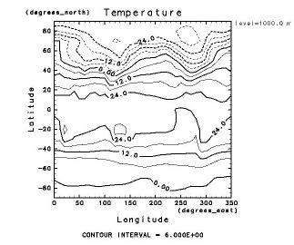</a><br>

<p>上記プログラムの第1, 2行目は毎回呼ぶおまじないである. 
最初の<tt>require "numru/ggraph"</tt> は必要なライブラリーを
全てロードする. 次の<tt>include NumRu</tt> はしなくてもよいが, 
その場合 <tt>GGraph</tt>や <tt>DCL</tt> はすべて
<a href="#full_name_numru">フルネーム,</a>
つまり
<tt>NumRu::GGraph</tt> や <tt>NumRu::DCL</tt> で呼ばねばならない. 
</p><br>

<p>第3行目 <tt>gphys = GPhys::IO.open('T.jan.nc', 'T')</tt>
では, ファイル <tt>T.jan.nc</tt> 中の変数
<tt>T</tt> に対し, GPhys オブジェクトを構成し, 変数名 <tt>gphys</tt>
を割り当てている. 
<tt>GPhys::IO.open</tt> はファイルの種類を自動判別し, 
それぞれに対応したモジュールに処理を投げる. 今回は
NetCDF であるため, 実際には <tt>GPhys::NetCDF_IO.open</tt> 
が呼ばれる. ここで, モジュール <tt>GPhys::NetCDF_IO</tt> は NetCDF
ファイルの解釈を司る. ユーザーが特に指定しない限り, 
NetCDFユーザーズガイドに従ったコンベンション解釈が行われる. 
即ち, 次元名＝変数名のルールに則って座標変数(lon, lat, level)も解釈され, 
GPhys オブジェクト (ここでは変数名<tt>gphys</tt>) 内に参照が保持される. 
データ欠損についても解釈が行われ, 属性 <tt>valid_range</tt> や
<tt>missing_value</tt> が指定されている場合, 
欠損の存在を考慮する. 具体的には値を取出す際（後述）は欠損値付の
NArray たる NArrayMiss クラスのオブジェクトが返るようになる. 
</p><br>

<p> 第4行目 <tt>DCL.gropn(1)</tt> は, DCL のグラフィック装置初期化である. 
引数が 1 の場合, 端末画面に表示される. 
第5行目は通常必要ないが, ここでは制御文字の
解釈を抑制し(<tt>DCL.sgpset('lcntl', false)</tt> アンダースコアー
等が特殊文字として解釈されないようにする), 座標軸につける文字の大きさを
0.7 倍にしている (<tt>DCL.uzfact(0.7)</tt>). 
</p><br>

<p> 第6行目でいよいよ描画である. <tt>GGraph.contour(gphys)</tt>
は, 引数に与えられた GPhys オブジェクトのデータを等高線表示する. 
前述のように, ３次元目以降に関しては自動的に最初の点が選ばれるので, 
1000 mb における水平分布のプロットとなる. 1000 mb が選ばれたことは, 
図の右上の枠外に表示された <tt>level=1000 milibar</tt>の表示からわかる. 
<!-- なお, この図では表示すべき文字列が長いので 'm' 以降が表示されていない. 
これを回避する方法は後述する. -->
図からわかるように, <tt>GGraph.contour</tt>
は自動的に座標軸等の解釈を行う（x軸, y軸が正しく書かれていることに注意）. 
実は, 第5行目で制御文字解釈を抑制したのは, 表示される x, y 軸の単位に
アンダースコアーが含まれているからである. 
</p><br>

<p> 第7行目は DCL の終了処理である. 

<p> 以上, 必ずしも必要ない第5行目を除けば, 全部で6行でファイルのオー
プンから可視化, 終了処理までが行える. 図をカスタマイズする方法は後で述べる. 
その際, プログラムが急に長くなったりしないのがポイントである. 
</p><br>

<a name="h3:saisoku line">
<p><h3>最速描画(折れ線)</h3><br>
</a>

<p>同じ要領で折れ線を描いてみよう. 上のプログラムで 6 行目の
<tt>GGraph.contour(gphys)</tt> を <tt>GGraph.line(gphys)</tt>
に変えればよい. 但しそれだと２次元目(緯度)に関し, 最初の格子点
（つまり北極）が選ばれてしまい面白くない. そこで, 日本付近の
鉛直プロファイルを描いてみよう. GPhysのメソッド <tt>cut</tt>
は実空間での切り出しを行う. これは次元を順番に指定する方法と, 
次元を名前で指定する方法の２通りの使い方ができる. 
以下の2行は全く同じ結果となる. <a name="cut introduced"></a>

<table width=80%><tr><td><pre class="source">
gp_jpn = gphys.cut(135,35,true)
gp_jpn = gphys.cut('lon'=>135,'lat'=>35)
</pre></td></tr></table>

<p>最初の場合の引数の指定方法は NArray の [] メソッドと同様である. 
従って, 名前で指定した場合と同様に２次元以上任意の次元数(rank)のデータ
に対応するには, 下記のように true でなく false による「ラバー次元」を使えば良い. 
ラバー次元は任意個の true (全範囲の指定) に相当する. 

<table width=80%><tr><td><pre class="source">
gp_jpn = gphys.cut(135,35,false)
</pre></td></tr></table>

<p>（余談だが yorick という言語ではラバー次元は .. と表せる. 
つまり (135,35,..) など. この方が見た目わかりやすいが, Ruby では
.. を独立させることはできないので使えない. ）

</p><br>
<p>では, 図を描いてみよう. 
</p><br>

<p><a href="line_1.rb">line_1.rb</a>
<table width=80%><tr><td><pre class="source">
1: require "numru/ggraph"
2: include NumRu
3: gphys = GPhys::IO.open('T.jan.nc', 'T')
4: DCL.gropn(1)
5: DCL.sgpset('lcntl', false) ; DCL.uzfact(0.7)
6: GGraph.line( gphys.cut(135,35,false) )
7: DCL.grcls
</pre></td></tr></table>

<p>結果はこうなる：
</p><br>

<p><a href='line_1.png'>line_1.rb実行結果<br>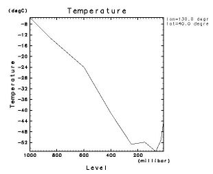</a><br>

<p>
右上枠外には, "lon=130.0 degrees_east", "lat=40.0 degress_north" と表
示される. cut は一番近い格子点を選ぶようになっており, ちょうど真ん中
を指定した場合はより格子点番号の小さい方が選ばれる. 
<a href="#ncdump T.jan.nc">経度は東→西, 緯度は北→南に格納されているので</a>, このような緯度・経度が選ばれるのである. 
</p><br>

<p>さて, 鉛直座標である圧力が横軸に来ると, 
どうも鉛直プロファイルであるような気がしない. 
そこで, 縦軸と横軸を入れ替え, 圧力軸は対数スケールで表示してみよう. 
ついでに, 枠外右上の情報が切れないよう全画面表示にしよう
(<tt>DCL.sgpset('lfull',true)</tt>). 
</p><br>

<a name='line_2'></a>
<p><a href="line_2.rb">line_2.rb</a>
<table width=80%><tr><td><pre class="source">
1: require "numru/ggraph"
2: include NumRu
3: gphys = GPhys::IO.open('T.jan.nc', 'T')
4: DCL.gropn(1)
5: DCL.sgpset('isub', 96)   # control character of subscription: '_' --> '`'
6: DCL.sgpset('lfull',true) ; DCL.uzfact(0.6)
7: GGraph.set_fig( 'itr'=> 2, 'viewport'=>[0.25,0.7,0.15,0.6] )
8: GGraph.line( gphys.cut(135,35,false), true, 'exchange'=>true )
9: DCL.grcls
</pre></td></tr></table>
</p><br>

<p><a href='line_2.png'>line_2.rb実行結果<br>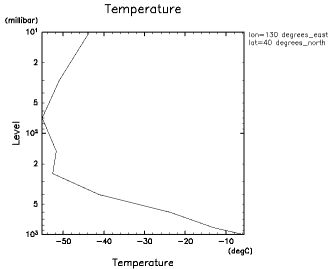</a><br>

<p> 上のプログラムでは, 縦軸を対数スケーリングにするため, 第6行目で
GGraph.fig のオプション <tt>itr</tt> を設定している
(<a href="http://ruby.gfd-dennou.org/products/gphys/doc/ggraph.html" target=_top>GGraphマニュアル</a>参照). 
この場合, コントロール文字を無効にすると, 軸につけるラベルがあまり美しくなくなるので,
<tt>DCL.sgpset('lcntl', false)</tt> で無効にするのではなく,
5行目の <tt>DCL.sgpset('isub', 96)</tt> で, 下つきを示す字を '_' から '`'
に変更した. 
さらに, 全画面表示に呼応して, viewport を変えている（デフォルト値は
[0.2,0.8,0.2,0.8]）. 
GGraph.fig は新しい図の枠を定義するメソッドであり, 
GGraph.line の第２引数が true のとき呼ばれる. 第２引数は省略可能で
true はデフォルト値である. 
第7行目は GGraph.line を呼んでいるが, GGraph.line のオプションは第３引
数(以降)であるので, 第2引数の true を陽に設定している（間違えやすいの
で第2引数が true/false 以外なら例外によりユーザーに通知する）. 
そして, オプションとして <tt>'exchange'=>true</tt> を指定している. 
これにより, デフォルトと逆に, 座標を縦軸, データを横軸に書くようになる. 
オプションについてはまた後で解説する. 

<hr>
<a name="h2:file_fomats">
<p><h2>様々なファイル形式</h2><br>
</a>

<p> GPhys では NetCDF, GrADS, grib 形式のファイルを同じように
扱うことが出来る. 但し今のところ GrADS 形式での書き出しはサポートしない.

<a name="h3:file_hanbetsu">
<p><h3>ファイル形式の判別</h3><br>
</a>

<p> <tt>GPhys::IO.open(file, varname)</tt> において, 
<tt>file</tt> は文字列で表したパス, または NumRu::NetCDF 等ファイルを直接代表するクラスのオブジェクトを取れる.
パスの場合, ファイルの種類は自動的に判別される. そのルールは下記の通りである.
<ol>
 <li> サフィックスが 'nc', 'ctl', 'grib': それぞれ NetCDF, GrADS,
      grib を仮定. 
 <li> それ以外. ファイルの最初のほうを読んで判別する. 
</ol>

<p> ファイル形式を陽に指定して読み込むこともできる. それぞれ, 
    <tt>GPhys::NetCDF_IO.open</tt>, <tt>GPhys::GrADS_IO.open</tt>,
    <tt>GPhys::Grib_IO.open</tt> を用いる.


<a name="h3:grads_grib_examples">
<p><h3>GrADS,gribファイル描画例</h3><br>
</a>

<p> 次のプログラムは, 上記の
<a href="#contour1000mb_1">contour1000mb_1.rb</a>
の3行目でファイル名だけを
<tt>T.jan.nc</tt> から <tt>T.jan.ctl</tt> に変えただけのものである.
それ以外は全く同じプログラムで GrADS 形式のデータを描画できる.

<p><a href="contour1000mb_grd.rb">contour1000mb_grd.rb</a>
   <a name="contour1000mb_grd"></a>
<table width=80%><tr><td><pre class="source">
 1: require "numru/ggraph"
 2: include NumRu
 3: gphys = GPhys::IO.open('T.jan.ctl', 'T')
 4: DCL.gropn(1)
 5: DCL.sgpset('lcntl', false) ; DCL.uzfact(0.7)
 6: GGraph.contour( gphys )
 7: DCL.grcls
</pre></td></tr></table>
<br>

<p> 同様に, 次のプログラムは grib ファイルのデータを描画する.
実行には, GPhys 0.4.0 以上が必要である.  

<p><a href="contour1000mb_grib.rb">contour1000mb_grib.rb</a>
   <a name="contour1000mb_grib"></a>
<table width=80%><tr><td><pre class="source">
 1: require "numru/ggraph"
 2: include NumRu
 3: gphys = GPhys::IO.open('T.jan.grib', 'TMP')
 4: DCL.gropn(1)
 5: DCL.sgpset('lcntl', false) ; DCL.uzfact(0.7)
 6: GGraph.contour( gphys )
 7: DCL.grcls
</pre></td></tr></table>
<br>

<p> 上では, 変数名がこれまでの 'T' でなく 'TMP' となっていることに注意.
gribファイル中では変数は名前を持たず, 変数の種類に応じて決まった番号
があるだけである. <tt>GPhys::Grib_IO</tt> においてはその番号に
<a href="http://www.cpc.ncep.noaa.gov/products/wesley/wgrib.html">wgrib
</a>で使われている名前を割り当てている. それが, 気温に関しては
'TMP' なのである. 但し, 
wgrib では同じ変数でも異なる複数の名前が使われていることがあるので, 
wgrib コマンドの実際の出力と <tt>GPhys::Grib_IO</tt> 
における変数名は必ずしも一致しない. 
ではどうすれば良いかについては次を参照のこと.

<a name="h3:inspect_var_names">
<p><h3>ファイル中の変数名の調べ方</h3><br>
</a>

<p> NetCDFファイルであれば,
<a href="#h2:data">上記のように</a>コマンドラインで <tt>ncdump</tt>
コマンドで調べられる. GrADSファイルであれば, 
コントロールファイルはテキストなのでそれを見ればよい.
しかし, GPhys を用いれば, ファイルの種類に依存せず同じ方法で調べられる.

<a name='inspect_varnames'></a>
<p><a href="inspect_varnames.rb">inspect_varnames.rb</a>
<table width=80%><tr><td><pre class="source">
 1: require "numru/gphys"
 2: p NumRu::GPhys::IO.var_names('T.jan.grib')
 3: p NumRu::GPhys::IO.var_names('T.jan.ctl')
 4: p NumRu::GPhys::IO.var_names('T.jan.nc')
</pre></td></tr></table>
</p><br>

<p> 結果は下記の通りである.

<table width=80%><tr><td><pre class="source">
% <span class="command">ruby inspect_varnames.rb</span>
["TMP"]
["T"]
["lon", "lat", "level", "T"]
</pre></td></tr></table>

<p> gribファイルには "TMP", GrADS, NetCDF ファイルには "T" 
という変数があることがわかる. NetCDFファイルでは他に　"lon",
"lat", "level" という変数名もでるが, NetCDF 
ではこれら座標変数も自分自身を座標変数とする GPhys 
オブジェクトとして <tt>GPhys::IO.open</tt> で開くことができる.
しかし, これだけのためにプログラムをファイルにするのは面倒だと思われよう. 次に, 対話的な利用法を紹介する.

<hr>
<a name="h2:irb">
<p><h2>irbを用いた対話利用(1)</h2><br>
</a>

<p> Ruby に標準添付の irb というコマンドは, 
対話的なセッションにおいて ruby のプログラムを行単位で解釈し実行する
shell のようなものである. 他に, emacs 上で実行する irb-shell
というものもある. 以下は,
<a href='#inspect_varnames'>上記の変数名調べ</a>を irb 
で行った結果をカットアンドペーストしたものである.
<tt>irb(main):001:0></tt>
等は irb のプロンプト, ”<tt>=></tt>” 以下は各行の実行結果の出力である. 

<table width=80%><tr><td><pre class="source">
% <span class="command">irb</span>
irb(main):001:0> <span class="command">require "numru/gphys"</span>
=> true
irb(main):002:0> <span class="command">include NumRu</span>
=> Object
irb(main):003:0> <span class="command">GPhys::IO.var_names('T.jan.grib')</span>
=> ["TMP"]
irb(main):004:0> <span class="command">GPhys::IO.var_names('T.jan.ctl')</span>
=> ["T"]
irb(main):005:0> <span class="command">GPhys::IO.var_names('T.jan.nc')</span>
=> ["lon", "lat", "level", "T"]
</pre></td></tr></table>

<p> 第1行目の入力は, これまでの <tt>require "numru/ggraph"</tt>
と違い, <tt>require "numru/gphs"</tt> となっている. 
こうすると GPhys 本体だけが読み込まれ, 
グラフィックライブラリー GGraph は読み込まれない.
(勿論図を書かない場合でも <tt>require "numru/ggraph"</tt> で構わないが,
このほうが若干立ち上げが早いであろう.)

<p> irb はデフォルトではコマンドの実行結果を p で表示するので,
<a href='#inspect_varnames'>上記のプログラム</a>と異なり,
陽には p をつけてない.

<a name="h3:irb_startup">
<p><h3>スタートアップファイルの利用(1)</h3><br>
</a>

<p> irb のセッション開始時に毎回 <tt>require "numru/gphys"</tt>,
<tt>include NumRu</tt> などの「おまじない」を呼ぶのは面倒なので,
スタートアップファイルを利用して自動化すると良い. 

<ul>
  <li> 方法１: ホームディレクトリーに .irbrc というファイルを用意し,
       最初に実行したいコードを書いておくと, irb の起動時に require
       される. 
  <li> 方法２: irbを利用するときにに常にそれが実行されるのが嫌であれば,
       適当なファイルに require すべきコードを書いておき,
       それを実行する irb を別名で用意する. 
</ul>

<p> 筆者は２の方法を取っている. 以下に両方の具体例をしめす. 

<p><h4>.irbrc 利用例 (方法１)</h4><br>

<p> GPhys は利用するが, GGraph は利用しない場合.

<table width=80%><tr><td><pre class="source">
% <span class="command">cat ~/.irbrc</span>
require "numru/gphys"
include NumRu
% <span class="command">irb</span>
irb(main):001:0> <span class="command">GPhys::IO.var_names('T.jan.grib')</span>
=> ["TMP"]
irb(main):002:0> <span class="command">GPhys::IO.var_names('T.jan.ctl')</span>
=> ["T"]
irb(main):003:0> <span class="command">GPhys::IO.var_names('T.jan.nc')</span>
=> ["lon", "lat", "level", "T"]
</pre></td></tr></table>

<p> GGraph も利用する場合の例.

<table width=80%><tr><td><pre class="source">
% <span class="command">cat ~/.irbrc</span>
require "numru/ggraph"
include NumRu
include GGraph
DCL.swpset('iwidth',700)   # image width
DCL.swpset('iheight',700)  # image height
DCL.swpset('lwait',false)  # don't wait mouse click to show the next page
DCL.gropn(1)
DCL.sgpset('isub', 96)     # control character of subscription: '_' --> '`'
DCL.sgpset('lfprop',true)  # to use the propotional font
</pre></td></tr></table>

<p> このように, <tt>require "numru/gphys"</tt>, <tt>include NumRu</tt>
に加えて, 作図をする上で共通に呼ぶ命令を実行するようにしておくと良い.
なお, 上では画面のデフォルトサイズを 700×700 にし,
描画時の待ちをなくしてマウスクリックなしで次のページが表示されるようにし,
したつき添字を表すためのコントロール文字を <tt>_</tt> から <tt>`</tt>
に変更するなどしている. スタートアップファイルさえ設定しておけば,
次のように irb 起動後に２行入力するだけで図が出せる.
なお, html の都合上, かぎ括弧は全角にしてある.

<table width=80%><tr><td><pre class="source">
% <span class="command">irb</span>
 *** MESSAGE (SWDOPN) ***  GRPH1 : STARTED / IWS =  1.                         
irb(main):001:0> <span class="command">gphys = GPhys::IO.open('T.jan.nc', 'T')</span>
=> &lt;GPhys grid=&lt;3D grid &lt;axis pos=&lt;'lon' in 'T.jan.nc'  sfloat[36]&gt;&gt;
        &lt;axis pos=&lt;'lat' in 'T.jan.nc'  sfloat[19]&gt;&gt;
        &lt;axis pos=&lt;'level' in 'T.jan.nc'  sfloat[9]&gt;&gt;&gt;
   data=&lt;'T' in 'T.jan.nc'  sfloat[36, 19, 9]&gt;&gt;
irb(main):002:0> <span class="command">contour( gphys.mean(0) )</span>
=> nil
</pre></td></tr></table>

<p> ここで, <tt>gphys = GPhys::IO.open('T.jan.nc', 'T')</tt>
の結果の出力の見方は後で解説する. 2行目の入力における
<tt>mean(0)</tt> は最初の次元(＝経度)に関する平均である.
詳しくは<a href="#h3:heikin sonota">こちらを参照</a>のこと.

<p><a href='irbsample_contour1.png'>上記の irb セッション実行結果<br>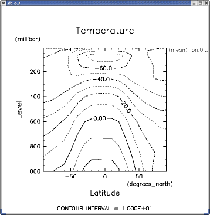</a><br><br>

<a name="h4:irb_start_up_no_irbrc">
<p><h4>.irbrc を利用しない例 (方法２)</h4><br>

<p>下記のように, irb のスタートアップファイルとしては認識されない
名前のファイルに実行するコードを書きエリアスで起動するようにする.
以下の alias は .cshrc などに書き込んでおくと良い.

<a name="souce .irbrc_ggraph">
<table width=80%><tr><td><pre class="source">
% <span class="command">alias irb_ggraph  'irb -r ~/.irbrc_ggraph'</span>
% <span class="command">cat ~/.irbrc_ggraph.rb</span>
require "numru/ggraph"
include NumRu
include GGraph
DCL.swpset('iwidth',700)   # image width
DCL.swpset('iheight',700)  # image height
DCL.swpset('lwait',false)  # don't wait mouse click to show the next page
DCL.gropn(1)
DCL.sgpset('isub', 96)     # control character of subscription: '_' --> '`'
DCL.sgpset('lfprop',true)  # to use the propotional font
</pre></td></tr></table>

<p>このようにすると, GGraph のセッション用の irb が irb_ggraph
という名前で設定される. やはり下記のように2行で作図できる.

<table width=80%><tr><td><pre class="source">
% <span class="command">irb_ggraph</span>
 *** MESSAGE (SWDOPN) ***  GRPH1 : STARTED / IWS =  1.                         
irb(main):001:0> <span class="command">gphys = GPhys::IO.open('T.jan.nc', 'T')</span>
=> &lt;GPhys grid=&lt;3D grid &lt;axis pos=&lt;'lon' in 'T.jan.nc'  sfloat[36]&gt;&gt;
        &lt;axis pos=&lt;'lat' in 'T.jan.nc'  sfloat[19]&gt;&gt;
        &lt;axis pos=&lt;'level' in 'T.jan.nc'  sfloat[9]&gt;&gt;&gt;
   data=&lt;'T' in 'T.jan.nc'  sfloat[36, 19, 9]&gt;&gt;
irb(main):002:0> <span class="command">contour( gphys.mean(0) )</span>
=> nil
</pre></td></tr></table>

<p> 筆者はこの方法を愛用している.

<hr>
<a name="h2:gphys nakami">
<p><h2>GPhysの中身を調べる</h2><br>
</a>

<p>
図を書かずにデータの中身を簡単に調べる方法を説明する. 
上で紹介した Ruby の対話シェル irb を使うことにしよう. 
チュートリアルとしての汎用性のため,
スタートアップファイルは使わないものとする. 使っている場合は
最初の数行を適宜省略すれば良い.
以下は kterm の画面をカットアンドペーストしたものであるが, 
html の都合上, かぎ括弧は全角にしてある. 
<table width=80%><tr><td><pre class="source">
% <span class="command">irb</span>
irb(main):001:0> <span class="command">require "numru/gphys"</span>
=> true
irb(main):002:0> <span class="command">include NumRu</span>
=> Object
irb(main):003:0> <span class="command">T</span>  ← ここでは T と入れてタブを２回入力 (下のようにファイル名が出ないケースもある)
T.jan.ctl   T.jan.dat   T.jan.grib  T.jan.nc    ToDo        
irb(main):003:0> <span class="command">GPhys::IO.var_names('T.jan.nc')</span>  # for GPhys >= 0.4.0
=> ["lon", "lat", "level", "T"]
irb(main):004:0> <span class="command">gphys = GPhys::IO.open('T.jan.nc', 'T')</span>
=> &lt;GPhys grid=&lt;3D grid &lt;axis pos=&lt;'lon' in 'T.jan.nc'  sfloat[36]&gt;&gt;
        &lt;axis pos=&lt;'lat' in 'T.jan.nc'  sfloat[19]&gt;&gt;
        &lt;axis pos=&lt;'level' in 'T.jan.nc'  sfloat[9]&gt;&gt;&gt;
   data=&lt;'T' in 'T.jan.nc'  sfloat[36, 19, 9]&gt;&gt;
irb(main):005:0&gt; 
</pre></td></tr></table>

<p> irb は各行を実行した結果を, お任せ表示関数 p を使って標準出力に出力する. 
p による表示は必ずしも綺麗とは限らないが, 便利である. 
1,2行目の入力(001,002)はいつものおまじないである. 
3行目では <tt>T</tt> に続いて TAB キーを2回入力してみよう. 
多くのケースで T から始まるファイル名のリストが表示されるはずである.
これは恐らく irb 自体の機能でなく, キー入力を司る readline
というライブラリーの機能なので, こうならないケースもある.
続いてやり直しになる実際の3行目の入力 (２度目の003) は, GPhys 0.4.0
でサポートされた関数 <tt>GPhys::IO.var_names</tt>
を用いてファイル中の GPhys 化可能な変数名を表示する.
そして４行目の入力では変数 'T' に関し GPhys オブジェクトを作成する
(<tt>gphys = GPhys::NetCDF_IO.open('T.jan.nc', 'T')</tt>). 
その結果が p で表示されたものは４行にわたっている. 少し見にくいが, 
lon, lat, level の３次元データ T となっており, それぞれがファイル
T.jan.nc に格納されていることが見て取れる. 数値型や各次元の長さも
表示されている. 次元の並べ方は Fortran と同様で,
「一番速くまわる」次元が最初に来る(<a href="#ncdumped">ここを参照</a>). 
</p><br>

<p>
では, 次のプログラムを実行しよう. 
</p><br>

<a name='inspect'></a>
<p><a href="inspect.rb">inspect.rb</a>
<table width=80%><tr><td><pre class="source">
 1: require "numru/gphys"
 2: include NumRu
 3: p gphys = GPhys::NetCDF_IO.open('T.jan.nc', 'T')
 4: p 'name = '+gphys.name, 'rank:',gphys.rank, 'shape:', gphys.shape
 5: print '[1st dim]  name:', gphys.coord(0).name, 
 6:      '  long_name:',gphys.coord(0).get_att('long_name'),
 7:      '  units:',gphys.coord(0).get_att('units'),
 8:      "  min,max:#{gphys.coord(0).min},#{gphys.coord(0).max}\n"
 9: prs = gphys.coord(2).val
10: t_jpn = gphys.cut(135,35,true).val
11: print "\n#{gphys.coord(0).name}\t#{gphys.name}\n"
12: for i in 0...prs.length do
13:   print prs[i], "\t", t_jpn[i], "\n"
14:end
</pre></td></tr></table>
</p><br>

<p> 今度は irb を使わないので p は陽に呼ばなければならない (3行目 etc). 
以下に実行結果を示す. 
</p><br>

<table width=80%><tr><td><pre class="source">
% <span class="command">ruby inspect.rb</span>
&lt;GPhys grid=&lt;3D grid &lt;axis pos=&lt;'lon' in 'T.jan.nc'  sfloat[36]&gt;&gt;
        &lt;axis pos=&lt;'lat' in 'T.jan.nc'  sfloat[19]&gt;&gt;
        &lt;axis pos=&lt;'level' in 'T.jan.nc'  sfloat[9]&gt;&gt;&gt;
   data=&lt;'T' in 'T.jan.nc'  sfloat[36, 19, 9]&gt;&gt;
"name = T"
"rank:"
3
"shape:"
[36, 19, 9]
[1st dim]  name:lon  long_name:Longitude  units:degrees_east  min,max:0.0 degrees_east,350.0 degrees_east

lon     T
1000.0  -5.50255870819092
850.0   -13.0088624954224
600.0   -23.8766059875488
400.0   -41.1900672912598
250.0   -52.6089935302734
150.0   -51.7955780029297
70.0    -55.255916595459
30.0    -51.0108757019043
10.0    -43.6157722473145
</pre></td></tr></table>

<p>
プログラムの 4 行目以降を解説しよう. 
</p><br>

<p>
4 行目:
<p>
<pre>
     p 'name = '+gphys.name, 'rank:',gphys.rank, 'shape:', gphys.shape
</pre>
<p>
は GPhys オブエジェクトの名前(name), 
次元数(rank), 各次元の長さ(shape)を表示する. 
</p><br>

<p>
5〜8 行目:
<p>
<pre>
     print '[1st dim]  name:', gphys.coord(0).name, 
          '  long_name:',gphys.coord(0).get_att('long_name'),
          '  units:',gphys.coord(0).get_att('units'),
          "  min,max:#{gphys.coord(0).min},#{gphys.coord(0).max}\n"
</pre>
<p>
は一続きの命令である. 第 5,6,7 行がコンマで終るため, 
継続の必要が明らかだからそう解釈される. 
<tt>gphys.coord(<i>idim</i>)</tt> は, <tt><i>idim</i></tt>番目の次元
(0から数える) の座標値を格納するデータを返す（なお, GPhys
は座標値以外にも各次元に関する情報を整理して管理するようになっている. 
各次元に関する情報は <tt>gphys.axis(<i>idim</i>)</tt> で得られ, 
座標値はそれに <tt>pos</tt> メソッドを適用することでも得られる. 
つまり, <tt>gphys.axis(<i>idim</i>).pos</tt> は
<tt>gphys.coord(<i>idim</i>)</tt> と同じ結果を返す. 
ここでは簡単のためこれ以上の解説はしない）. 
座標値は, VArray (＝Virtual Array) という, 
多次元配列と基本的には同じ機能を持つクラスのオブジェクトを返す. 
VArray は, 多次元の数値データに加えて, 名前と任意個の「属性」
を持つことが出来る. 属性とは任意の名前(文字列)と値の組で, 
値の仕様は NetCDF と同様である(数値の1次元配列または文字列). 
VArray のデータ本体は NArray でもよいし, NetCDF
ファイル中の変数でもよい. ここでは後者である. この場合,
必要になるまでデータの読み込みは行われない. よって,
巨大なデータファイルを開くことが直ちにメモリーを圧迫することにはならない. 
プログラムの 5〜8 行目と出力を見比べると, 
<tt>gphys.coord(0).name</tt> は名前を, 
<tt>gphys.coord(0).get_att('long_name')</tt> は属性 long_name を
<tt>gphys.coord(0).max</tt> は座標値の最大値を返すことなどがわかるであろう. 
存在しない属性を読み込もうとすると, 返り値は nil となる
(例外は発生しない). 
</p><br>

<p>
9行目(<tt>prs = gphys.coord(2).val</tt>)では, (ゼロから数えて)第2次元, 
即ち圧力 (変数名<tt>level</tt>) の値を読み込む. VArray のメソッド val は
データの値を NArray で返す. 従ってここでは (ここで初めて)
ファイルからの変数値の読み込みが発生する. 
</p><br>

<p>
10行目(<tt>t_jpn = gphys.cut(135,35,true).val</tt>)では, 
日本付近の１鉛直プロファイルを選んだ上で, データを読み込む. 
データ読み込みの仕様については, 次の節で解説する. 
</p><br>

<p>
11行目はそれぞれの名前(name)を表示して, 
12〜14 行目で各格子点での圧力と気温の値を書出す. 
</p><br>

<hr>
<a name="h2:gdir">
<p><h2>ディレクトリーをブラウズ -- GDirの利用</h2><br>
</a>

<p>
GPhys-0.5.0 より，GPhys 用にファイルシステム中のディレクトリーを代表す
るクラス GDir が導入された．Ruby 組み込みの Dir と同様であるが，最大の
違いは

<ul>
  <li> GPhys化可能な変数を収めるファイルはディレクトリー扱いとし，
       GDir オブジェクトにできる
</ul>

<p>
ことである．即ち，NetCDF などのファイルに "cd" し，変数を "ls" するこ
とが出来る．なお，将来, HDF や NetCDF-4 など，ファイル中にディ
レクトリー構造をとれる形式をサポートする際には，それも GDir オブジェク
トに出来るようにする予定である．

<p>
上記以外の主な違いには次のようになる．

<ul>
  <li> GDir にとっての root ディレクトリーは，ファイルシステム中の任意
       のディレクトリーに設定できる．その場合，ルートディレクトリー下の
       ツリー内にないディレクトリーは見ることができない．
  <li> Dir クラスの全てのメソッドをサポートしているわけではない．
  <li> Dir クラスにはないメソッド／機能がある．例えば，ディレクトリー内を
       ls する際，配下のディレクトリー，変数(データファイルを代表して
       いる場合)，テキストファイルと判断されるファイル，の3種を区別
       することができる．
</ul>

<p>
詳しくは<a href="http://ruby.gfd-dennou.org/products/gphys/doc/gdir.html">
Gdirのオンラインマニュアル</a>を参照のこと．

<a name="h3:gdir-sample1">
<p><h3>GDir利用例(1)</h3><br>
</a>

<p>
GDir は irb を用いた対話利用に適している．利用に際しては，
<a href="#h3:irb_startup_gdir">スタートアップファイルにて準備する</a>
と便利であるが，ここではコピー＆ペーストだけで利用できるように
生の irb における利用法を示す．

<table width=80%><tr><td><pre class="source">
% <span class="command">pwd</span>
/hogehoge/TUTORIAL
% <span class="command">irb</span>
irb(main):001:0> <span class="command">require "numru/gphys"</span>
=> true
irb(main):002:0> <span class="command">include NumRu</span>
=> Object
irb(main):003:0> <span class="command">GDir.top</span>
=> "/"                      # デフォルトのトップディレクトリー
irb(main):004:0> <span class="command">GDir.top = Dir.pwd</span>    # トップディレクトリーを現在のディレクトリーに変更
=> "/hogehoge/TUTORIAL"
irb(main):005:0> <span class="command">GDir.pwd</span>
=> "/"     # カレントディレクトリーのデフォルトはトップ（ファイルシステムルートとは違う）
irb(main):006:0> <span class="command">GDir.ls</span>
Directories:
  'T.jan.ctl/'           # GPhys 化可能な変数を収めたファイルは
  'T.jan.grib/'          # ディレクトリとして表示される
  'T.jan.nc/'
  'testdir/'             # これはほんとにディレクトリ
Text files?:         # ドキュメント等見られるように，テキストファイルらし
  'ToDo'             # きものは表示される．その他のファイルは無視される
irb(main):007:0> <span class="command">GDir.ls_l</span>      # より詳しく表示
Directories:
         423  Sep 16  2003 T.jan.ctl/       # ファイルサイズ，更新日時，名前
       13167  Mar 10 13:03 T.jan.grib/
       26664  Aug 28  2003 T.jan.nc/
         512  Jul 21 13:13 testdir/
Text files?:
         206  Mar 23  2004  ToDo
=> nil
irb(main):008:0> <span class="command">GDir.cd 'T.jan.nc'</span>
=> /T.jan.nc/
irb(main):009:0> <span class="command">GDir.ls</span>
Data:            # Data: として表示されるのは，GPhys化可能な変数
  'lon'          # NetCDF の場合，座標変数もそれ自身を座標にもつ GPhys 
  'lat'          # として開けるので，名前が表示される．
  'level'
  'T'
=> nil
irb(main):010:0> <span class="command">GDir.ls_l</span>     # より詳しく
Data:
  lon   [lon=36]        'Longitude'     (degrees_east)
  lat   [lat=19]        'Latitude'      (degrees_north)
  level [level=9]       'Level' (millibar)
  T     [lon=36,lat=19,level=9] 'Temperature'   (degC)
=> nil
irb(main):022:0> temp = GDir.data 'T'  # カレントディレクトリーの変数を開く
=> &lt;GPhys grid=&lt;3D grid &lt;axis pos=&lt;'lon' in '/hogehoge/TUTORIAL/T.jan.nc'  sfloat[36]&gt;&gt;
        &lt;axis pos=&lt;'lat' in '/hogehoge/TUTORIAL/T.jan.nc'  sfloat[19]&gt;&gt;
        &lt;axis pos=&lt;'level' in '/hogehoge/TUTORIAL/T.jan.nc'  sfloat[9]&gt;&gt;&gt;
   data=&lt;'T' in '/hogehoge/TUTORIAL/T.jan.nc'  sfloat[36, 19, 9]&gt;&gt;
</pre></td></tr></table>

<p>
このように，ファイルも含めディレクトリーとして扱うことで，
階層的に整理されたデータセットから所望の変数を探し，
GPhys オブジェクトとして開くことができる．

<a name="h3:gdir-sample2">
<p><h3>GDir利用例(2)</h3><br>
</a>

<p>
上の例では，GDir のカレントディレクトリー（GDirのクラス変数になってい
る）のみを用いたので，GDir オブジェクトは陽には現れなかった．今度は，
GDir オブジェクトを扱う例を示す．

<table width=80%><tr><td><pre class="source">
% <span class="command">irb</span>
irb(main):001:0> <span class="command">require "numru/gphys"</span>
=> true
irb(main):002:0> <span class="command">include NumRu</span>
=> Object
irb(main):003:0> <span class="command">GDir.top = Dir.pwd</span>    # トップディレクトリーを現在のディレクトリーに変更
=> "/hogehoge/TUTORIAL"
irb(main):004:0> <span class="command">dir = GDir.cwd</span>   # カレントディレクトリーを取得
=> /
irb(main):005:0> <span class="command">dir.class</span>
=> NumRu::GDir        # dir は GDir オブジェクトである
irb(main):006:0> <span class="command">dir.ls</span>
Directories:
  'T.jan.ctl/'
  'T.jan.grib/'
  'T.jan.nc/'
  'testdir/'
Text files?:
  'ToDo'
=> nil
irb(main):007:0> <span class="command">dir2 = dir.dir('T.jan.grib/')</span>
=> /T.jan.grib/
irb(main):008:0> <span class="command">dir2.ls_l</span>
Data:
  TMP   [lon=36,lat=19,level=9] 'Temperature'   (K)
=> nil
irb(main):009:0> temp = dir2.data('TMP')
=> &lt;GPhys grid=&lt;3D grid &lt;axis pos=&lt;'lon' in 'TMP'  36&gt;&gt;
        &lt;axis pos=&lt;'lat' in 'TMP'  19&gt;&gt;
        &lt;axis pos=&lt;'level' in 'TMP'  9&gt;&gt;&gt;
   data=&lt;'TMP' in '/hogehoge/TUTORIAL/T.jan.grib'  [36, 19, 9]&gt;&gt;
</pre></td></tr></table>

<p>
この例では，GDir のカレントディレクトリーはトップディレクトリーのまま，
サブディレクトリーを GDir オブジェクトとして開き（変数名 dir2），その
中のデータを GPhys オブジェクトとして開いた．

<hr>
<a name="h2:irb-2">
<p><h2>irbを用いた対話利用(2)</h2><br>
</a>

<a name="h3:irb_startup_gdir">
<p><h3>スタートアップファイルの利用(2) -- GDir の利用</h3><br>
</a>

<p>
<a href="#h4:irb_start_up_no_irbrc">前述の irb 読み込み用ファイル
.irbrc_ggraph</a> に GDir に関する設定を追加して，shell のように
irb を使えるようにする．「shell のように」とは，ls や ls_l と打ち込め
ばディレクトリーや変数がリストされ，cd でディレクトリーを変ったり，
簡単に GPhys 変数が開けたり（コマンド名は open とする）するということ
である．

<a name="souce .irbrc_ggraph(2)">
<table width=80%><tr><td><pre class="source">
% <span class="command">alias irb_ggraph  'irb -r ~/.irbrc_ggraph'</span>
% <span class="command">cat ~/.irbrc_ggraph.rb</span>
print "Start interactive GGraph session\n"

require "numru/ggraph"
include NumRu
include GGraph

#<< GDir Setting >>
GDir.top='/'
GDir.cd(Dir.pwd)
def cwd; GDir.cwd; end        # returns the current working directory of GDir
def pwd; GDir.pwd; end        # prints the current working directory of GDir
def ls(path=nil); GDir.cwd.ls(path); end         # listing
def ls_l(path=nil); GDir.cwd.ls_l(path); end     # verbose listing
alias dir ls_l
def cd(path); GDir.cd(path); end
def open_all_data; GDir.cwd.open_all_data; end  # --> Hash of GPhys objs in cwd
def data(path); GDir.cwd.data(path); end        # --> GPhys
alias open data

#<< Graphic Setting >>
DCL.swpset('iwidth',700)      # window width
DCL.swpset('iheight',700)     # window height
###DCL.swpset('ldump',true)      # dump image files
DCL.swpset('lwait',false)     # do not wait mouse click to show the next page
###DCL.swpset('lalt',true)       # background plot
DCL.sgscmn(10)                # change colomap (see below)
###DCL.sgscmn(5)                 # change colomap (see below)

DCL.gropn(1)
DCL.sgpset('lfprop',true)   # to use the propotional font
DCL.sgpset('lcorner',false) # do not show the corner mark
DCL.sgpset('isub', 96)      # control character of subscription: '_' --> '`'
DCL.glpset('lmiss',true)    # handle data missing
=begin
カラーマップ番号
 1:  dcl_original
 2:  black-orange-yellow-white
 3:  black-blue-cyan-white
 4:  blue-cyan-white-yellow-red
 5:  gray_scale
 6:  pastel_rainbow
 7:  black-rainbow-black
 8:  white_yellow_red
 9:  white_blue_black
 10: short_green_original
 11: black-rainbow-white
 12: pink-rainbow-pink
=end
</pre></td></tr></table>

<p>では，これを使ってデータを描画してみよう．コマンド名は，
上での alias により，irb_ggraph である．

<table width=80%><tr><td><pre class="source">
% <span class="command">irb_ggraph</span>
Start interactive GGraph session
 *** MESSAGE (SWDOPN) ***  GRPH1 : STARTED / IWS =  1.                         
irb(main):001:0> <span class="command">ls</span>
Directories:
  'T.jan.ctl/'
  'T.jan.grib/'
  'T.jan.nc/'
  'testdir/'
Text files?:
  'ToDo'
=> nil
irb(main):002:0> <span class="command">cd  'T.jan.nc/'</span>
=> /hogehoge/TUTORIAL/T.jan.nc/
irb(main):003:0> <span class="command">ls</span>
Data:
  'lon'
  'lat'
  'level'
  'T'
=> nil
irb(main):004:0> <span class="command">temp = open 'T'</span>
=> &lt;GPhys grid=&lt;3D grid &lt;axis pos=&lt;'lon' in '/hogehoge/TUTORIAL/T.jan.nc'  sfloat[36]&gt;&gt;
        &lt;axis pos=&lt;'lat' in '/hogehoge/TUTORIAL/T.jan.nc'  sfloat[19]&gt;&gt;
        &lt;axis pos=&lt;'level' in '/hogehoge/TUTORIAL/T.jan.nc'  sfloat[9]&gt;&gt;&gt;
   data=&lt;'T' in '/hogehoge/TUTORIAL/T.jan.nc'  sfloat[36, 19, 9]&gt;&gt;
irb(main):005:0> <span class="command">tone temp</span>
=> nil
</pre></td></tr></table>

<p>このように shell のようにディレクトリーを探りながら，データの図示や
解析ができる．

<p><a href='tone_irbggp.png'>上記のセッションの実行結果<br>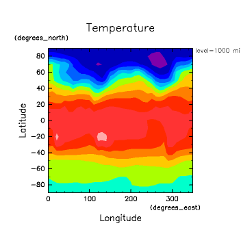</a><br>
</p><br>

<hr>
<a name="h2:data sousa">
<p><h2>データ操作の基礎</h2><br>
</a>

<p>
ここで, GPhys
におけるデータ操作の基礎を整理しておこう. 
巨大なデータを扱う際に気にすべき, データ読み込みに関する注意も述べる. 

<a name="h3:kiridashi">
<p><h3>切り出し</h3><br>
</a>

<p>
<a href="#cut introduced">上では</a>, メソッド <tt>cut</tt> により GPhys
の切り出しが行えることを述べた. GPhys のデータ切り出しメソッドには
<tt>cut</tt> と <tt>[]</tt> の2種類がある. <tt>cut</tt>
は物理的な座標を指定しての切り出しを行い, <tt>[]</tt> はデータの格子点
のインデックス（＝配列としての添字）に基づいた切り出しを行う. 
まずはそれぞれの仕様を例で示す. 
</p><br>

<p><a href="kiridashi.rb">kiridashi.rb</a>
<table width=80%><tr><td><pre class="source">
require "numru/gphys"
include NumRu
gphys = GPhys::NetCDF_IO.open('T.jan.nc', 'T')
print "gphys: rank=#{gphys.rank} shape=#{gphys.shape.inspect}\n"

gp135 = gphys.cut('lon'=>0..90)           # lon という名前の軸を 0〜90 度まで
print "gp135: rank=#{gp135.rank} shape=#{gp135.shape.inspect}\n"

gprg1 = gphys.cut( 100.0..150.0, 30..50, 850) # 1,2次元目は範囲, 3次元目は値で
print "gprg1 rank=#{gprg1.rank} shape=#{gprg1.shape.inspect}",
      "  0th dim: #{gprg1.coord(0).min} .. #{gprg1.coord(0).max}\n"

gprg2 = gphys[ 0..3, -3..-1, 0]               # 上と同様だが配列添字で指定
print "gprg2 rank=#{gprg2.rank} shape=#{gprg2.shape.inspect}",
      "  0th dim: #{gprg2.coord(0).min} .. #{gprg2.coord(0).max}\n"
p gprg2     # おまかせ表示
</pre></td></tr></table>
</p><br>

<p>以下は実行結果：
</p><br>

<table width=80%><tr><td><pre class="source">
% <span class="command">ruby -Ke kiridashi.rb</span>
gphys: rank=3 shape=[36, 19, 9]
gp135: rank=3 shape=[10, 19, 9]
gprg1 rank=2 shape=[6, 3]  0th dim: 100.0 degrees_east .. 150.0 degrees_east
gprg2 rank=2 shape=[4, 3]  0th dim: 0.0 degrees_east .. 30.0 degrees_east
&lt;GPhys grid=&lt;2D grid &lt;axis pos=&lt;'lon' shape=[4]  subset of a NumRu::VArrayNetCDF&gt;&gt;
        &lt;axis pos=&lt;'lat' shape=[3]  subset of a NumRu::VArrayNetCDF&gt;&gt;&gt;
   data=&lt;'T' shape=[4, 3]  subset of a NumRu::VArrayNetCDF&gt;&gt;
</pre></td></tr></table>
</p><br>

<p>
最後の行の p によるお任せ表示 (<tt>p gprg2</tt>)
の結果は, 'lon', 'lat', 'T' のデータがいずれも
"subset of a NumRu::VArrayNetCDF" であることを示して
いる (<tt>VArrayNetCDF</tt>はNetCDF変数をあたかも
配列のように見せるためのソケットのようなクラスである). 
実は, GPhys における「切り出し」は全て, 元のデータへの範囲を
限った参照を定義するだけなのである. 
さらに, この例のように NetCDF ファイル中のデータに関して GPhys
オブジェクトを定義した場合, 受け皿となる <tt>VArrayNetCDF</tt>
は, 内部データとしては NetCDF 変数への参照しか持たない. 
よって, 上記の kiridashi.rb を実行しただけでは, 
変数の値は読み込まれない（ただし属性は必要に応じて読み込まれる）. 
値の読み込みは, 可視化などのために実際に必要になるまで行われないのである. 
</p><br>

<p>
<a href="#contour1000mb_1">可視化の最初の例</a>における
<tt>GGraph.contour( gphys )</tt> では, 
先ず最初に２次元のサブセット(最下層データ)の切り出しが行われ, 
その後図示に必要なデータのみを読み込む. 従って, 仮に元のデータ
が数100MBの４次元データだったとしても問題ない. 
</p><br>


<p>
さて, 切り出しは参照であるから, もしも上記の <tt>gprg2</tt>
に値を書き込めば <tt>gphys</tt>, そして大元の NetCDF
ファイルに変更が反映されることになる. 
しかし, デフォルトではファイルは Read-only でオープンされるので, 
不用意にファイルを変更する心配はいらない. 
実は, GPhys::NetCDF_IO.open の第一引数は, NetCDF オブジェクトまたは
文字列を受け取ることになっている. そして, もし文字列なら内部で read-only の
NetCDF オブジェクト をオープンして使う. 
</p><br>

<p>
書き込みを許したければ, 以下のように, 
予め書き込み可能としてオープンした
NetCDF オブジェクトを GPhys::NetCDF_IO.open に与える必要がある. 
</p><br>

<table width=80%><tr><td><pre class="source">
file = NetCDF.open('T.jan.nc', 'a')        # 'a' はファイルの編集を許すモード
gphys = GPhys::NetCDF_IO.open(file, 'T')
</pre></td></tr></table>

<p>
<tt>NetCDF.open</tt> の引数は, ファイル名と入出力モード（省略可）である. 
入出力モードは Ruby に組み込みの File クラスの仕様と同じである
(そしてそれは C 言語の仕様と同じである). 但し,
NetCDFは常にバイナリーであるため 'b' は必要く,
またどのモードでも読み込みは可能である.
</p><br>

<a name="h3:heikin sonota">
<p><h3>平均やその他の演算について</h3><br>
</a>

<p>GPhys データは切り出すだけでなく, 平均を取ったり
数学演算や統計操作を行うことができる. 
切り出しまではデータに関する演算が不要であるので, 
GPhysオブジェクトは NetCDF ファイル中の変数
への参照を保持しているだけだったが, 
平均をとるなどとなれば実際のデータの読み出しと演算が行われることになる. 
データはもはやファイルを離れ, メモリー上に保持される. しかし, 
GPhys においては, メモリー上のデータも, ファイル中にあるデータと全く同様に
扱われる. 従って, 利用者は両者を区別する必要はない. 但し, 巨大な
データを扱っている際には, メモリーを圧迫しないよう, 必要な部分を切り出
してから演算することは心掛けたほうが良い. 
</p><br>

<p> 実際, クラス GPhys は, データがファイル中にあるのか
NArray 中にあるのかを, 直接には全く知らない. 
この違いは, GPhys 配下の VArray (= Virtual Array)が吸収する. 
例えば前述の VArrayNetCDF は, VArray のサブクラスである. 
（よって, 未サポートのフォーマットへの対応は, 対応する VArray
を作ることが主な仕事となる. ）
</p><br>

<p> さて, 下のプログラムは, 全球平均気温の鉛直プロファイルを表示する. 
ソースは <a href="#line_2"><tt>line_2.rb</tt></a>
とほとんど変らないことに注意せよ. 
</p><br>

<p><a href="line_3.rb">line_3.rb</a>
<table width=80%><tr><td><pre class="source">
 1: require "numru/ggraph"
 2: include NumRu
 3: gphys = GPhys::IO.open('T.jan.nc', 'T')
 4: DCL.gropn(1)
 5: DCL.sgpset('isub', 96)
 6: DCL.sgpset('lfull',true)
 7: DCL.uzfact(0.6)
 8: GGraph.set_fig( 'itr'=> 2, 'viewport'=>[0.25,0.7,0.15,0.6] )
 9: GGraph.line( gphys.mean(0,1), true, 'exchange'=>true )
10: DCL.grcls
</pre></td></tr></table>

<p>結果の図は下. 枠外右上の情報が平均を表すものに変っていることに注意. 
</p><br>

<p><a href='line_3.png'>line_3.rb実行結果<br>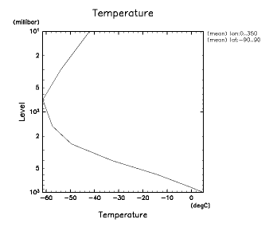</a><br>
</p><br>

<p>ここでは, mean(0,1)で第 1,2 次元目の平均を取っている. 
配列要素同様, 次元も 0 から数えるのである. 
GPhysのメソッド mean は各格子点の重みが等しい単純平均を行う. 
利用法は NArray のメソッド mean と同じである（そして, 同様に
sum, max, min, stddev などのメソッドがある）. 
</p><br>

<p>さて, 実際には, データは 90N-90S で離散的にサンプルされものが
入っているわけだから, 平均はむしろ, 台形公式やシンプソン公式等で積分した上で, 
長さで割るのが自然である. このような実空間での平均はメソッド average 
で行うことができる：
</p><br>

<table width=80%><tr><td><pre class="source">
9: GGraph.line( gphys.average(1).average(0), true, 'exchange'=>true )
</pre></td></tr></table>
<br>

<p> このような, 実空間における操作を行うメソッドは, 現在のところ 
average と integrate の２つである. 共にデフォルトの積分アルゴリズムは
台形公式である（実際には格子の性格によってアルゴリズムが変るが, 
NetCDFのユーザーズガイドのみを解釈している場合, 格子の性格は知り得ない
のでそうなる）. 
これらは各次元毎に行う必要があるので, 
average(1).average(0) と重ねて呼んでいる. なお, この場合でも, 
極付近の格子点の経度間隔が短いことを考慮した平均にはならないことに注意. 
将来的には, 球座標などいった座標系を設定し, 解釈させられるようにする予定である. 
</p><br>

<hr>
<a name="h2:units">
<p><h2>物理量の単位</h2><br>
</a>

<p>
VArray, GPhys は, 物理量の単位を認識する. 
</p><br>

<p>
単位は属性 "units" で指定され, その演算は<a
href="http://ruby.gfd-dennou.org/products/numru-units" target=_top>
NumRu::Units</a> が行う. これにより, 例えば VAray や GPhys の掛け算を
行うと, 単位の掛け算も行われる. また, 定数倍 and/or オフセット分の違い
がある単位を持つデータの和・差は, 第２項を第１項の単位に合わせる換算を
行ってから行う（例えば, km と m や degree_C と K の間の換算など）. 
</p><br>

<p>
さらに, GPhys のパッケージ内には, これを用いた
<a href="http://ruby.gfd-dennou.org/products/gphys/doc/unumeric.html">
NumRu::UNumeric</a>
という, 単位付の数値(スカラー)のクラスが定義されている. 
GPhys, VArray, UNumeric は自由に２項演算を行うことができる. 
（結果のクラスは GPhys, VArray, UNumeric の順に合わされる. 
例えば UNumric と GPhys の演算結果は GPhys. ）
</p><br>

<p><a href="op_units.rb">op_units.rb</a>
<table width=80%><tr><td><pre class="source">
 1: require "numru/gphys"
 1: include NumRu
 2: temp = GPhys::NetCDF_IO.open('T.jan.nc', 'T')
 3: p( temp.data.get_att('units') )
 4: p( (temp*temp).data.get_att('units') )
 5: p( (temp*temp).units.to_s )
 6: 
 7: R = UNumeric[ 287.04, 'J.K-1.kg-1' ]   # Gas const of dry air
 8: p( (R*temp).data.get_att('units') )  # Bad, because temperature should be in K
 9: zeroK = UNumeric[ 0.0, 'K' ]
10: tempK = zeroK + temp
11: p( (R*tempK).data.get_att('units') )
</pre></td></tr></table>
</p><br>

<p>以下は実行結果：
</p><br>

<p><table width=80%><tr><td><pre class="source">
% <span class="command">ruby op_units.rb</span>
"degC"
"degC2"
"degC2"
"J.K^(-1.0).degC.kg-1"
"J.kg-1"
</pre></td></tr></table>
</p><br>

<p>
第４行目の <tt>(temp*temp)</tt> の結果として,
気温の単位 "degC" が2乗されて "degC2" となっていることがわかる. 
７行目では,  気体定数 R = 287.04 [J.kg-1.K-1] を準備し,
８行目では気温と掛け合わされる. 
その結果の単位は "J.K^(-1.0).degC.kg-1" となった. 
K と degC がキャンセルしてないので少し見にくいが,
しかし, 良く考えると気体定数に掛けて意味があるのは,
通常は絶対温度であることを思い出すであろう（たぶん）. 
そこで, 9,10行目では, 足し算の結果の単位が第一項に合わされることを利用して,
Kelvin に変換する：

<p><pre>
    zeroK = UNumeric[ 0.0, 'K' ]
    tempK = zeroK + temp
</pre>

<p>この結果に R を掛ける（11行目）と, 結果の単位は
"J.kg-1" と出た. 
</p><br>

<hr>
<a name="h2:nc kakidashi">
<p><h2>データをファイルに書出す</h2><br>
</a>

<p> GPhys を利用すると自己記述的なファイルの書き出しが容易に行える.
先ず最初に NetCDF など, すでに自己記述的なデータを GPhys
として読み込んでから（必要に応じて加工の上）ファイルに出力する
ケースを扱う. 後で示すようにファイルの型変換も容易である. 
ついで, 非自己記述的なデータ等をもとに一から
GPhys オブジェクトを構成した上でファイルに書出す例を示す.
現在のところ書出すファイル形式は NetCDF または grib だけで,
GrADS の書出しはまだサポートしてない. 

<a name="h3:gphys kakidashi">
<p><h3>GPhysデータの書出し</h3><br>
</a>

<p> GPhys オブジェクトの全体を, 自己記述性を保ったまま,
ファイルに書出すことができる. 次の例では,
NetCDF ファイルを読み込んで, 領域を限った一部分を
NetCDF ファイルに書出す.
書出す領域に対応して座標変数も正しく切り出される.

<p><a name="ncwrite1"></a>
<a href="ncwrite1.rb">ncwrite1.rb</a>
<table width=80%><tr><td><pre class="source">
1: require "numru/gphys"
2: include NumRu
3: gphys = GPhys::NetCDF_IO.open('T.jan.nc', 'T')
4: outfile = NetCDF.create('tmp.nc')
5: GPhys::NetCDF_IO.write( outfile, gphys.cut('level'=>1000..250).mean(0) )
6: GPhys::NetCDF_IO.write( outfile, gphys.cut('level'=>1000..250).mean(0,1).rename('T00') )
7: outfile.close
</pre></td></tr></table>
<br>

<table width=80%><tr><td><pre class="source">
% <span class="command">ruby ncwrite1.rb</span>
% <span class="command">ncdump -c tmp.nc</span>
netcdf tmp {
dimensions:
        lat = 19 ;
        level = 5 ;
variables:
        float lat(lat) ;
                lat:units = "degrees_north" ;
                lat:actual_range = 90.f, -90.f ;
                lat:long_name = "Latitude" ;
        float level(level) ;
...(中略)...
        float T(level, lat) ;
...(中略)...
        float T00(level) ;
...(中略)...
// global attributes:
                :history = "2004-03-19 19:40:17 JST horinout> NumRu::GPhys::NetCDF_IO.write T" ;
data:

 lat = 90, 80, 70, 60, 50, 40, 30, 20, 10, 0, -10, -20, -30, -40, -50, -60, 
    -70, -80, -90 ;

 level = 1000, 850, 600, 400, 250 ;
}
</pre></td></tr></table>

<p>
<a href="#ncwrite1">ソース</a>の第 5,6 行目のように, 
GPhys::NetCDF_IO.write を繰り返して, 一つのファイルに複数個の変数を
書くことが出来る. 
但し, NetCDF の制約で同じ名前の変数は一つしか書けないので,
ここでは2番目に書くデータを 'T00' と改名している. 
改名しなければ両データの名前は同じなので例外が発生する. 
一方, 座標変数の場合は, 複数の GPhys で共有してる場合が多いので, 
既存の同名のものがある場合は次元とサイズ(shape)をチェックし, 
一致すれば同じものと見なし書き込みを省略する. 
一致しない場合は例外が発生する. 
上の例では, <tt>level</tt>という座標変数が共有されている. 

<a name="h3:file type conversion">
<p><h3>ファイル形式の変換</h3><br>
</a>

<p> GPhysを介することで, ファイルの型変換を簡単に行うことができる.

<p><a name="convert.rb"></a>
<a href="convert.rb">convert.rb</a>
<table width=80%><tr><td><pre class="source">
 1: require "numru/gphys"
 2: include NumRu
 3: 
 4: usage = "\nUSAGE:\n % #{$0} in_file out_file\n"
 5: ifpath = ARGV.shift || raise(usage)
 6: ofpath = ARGV.shift || raise(usage)
 7: 
 8: raise "File #{ofpath} present. Delete it if needed." if File.exist?(ofpath)
 9: case ofpath
10: when /\.nc$/
11:   ofile = NetCDF.create(ofpath)
12: when /\.grib$/
13:   ofile = Grib.create(ofpath)
14: else
15:   raise "unsupported file type (judged by suffix): "+ofpath
16: end
17: 
18: GPhys::IO.var_names_except_coordinates( ifpath ).each do |varname|
19:   GPhys::IO.write(ofile, GPhys::IO.open(ifpath, varname) )
20: end
21: 
22: ofile.close
</pre></td></tr></table>
<br>

<p> このプログラムでは, 変換先のファイルの型を,
サフィックス (.nc か .grib) に応じて決めている.
入力ファイルの型は自動判別されるので, 特に何もしなくてよい.
なお, 19 行目では入力するファイル中の変数を一旦全部メモリーに
読み込んでからファイルに書出すようになっているので,
巨大データの扱いには相応しくない. 巨大データの取り扱い方法は後述する.
なお, <b>GPhys 0.4.0 ではバグのため, 上記プログラムによる
grib ファイルへの変換が行えない. 今後リリースされる 0.4.1
以降が必要になる.</b>

<p> 実行例 (但し, 3番目のは GPhys 0.4.0 では正常に実行できない):

<table width=80%><tr><td><pre class="source">
% <span class="command">ruby convert.rb T.jan.grib tmp1.nc</span>
% <span class="command">ruby convert.rb T.jan.ctl tmp2.nc</span>
% <span class="command">ruby convert.rb T.jan.nc tmp.grib</span>
% <span class="command">ls tmp*</span>
tmp.grib  tmp1.nc  tmp2.nc
</pre></td></tr></table>

<p> 出来たファイルの確認:

<table width=80%><tr><td><pre class="source">
% <span class="command">ncdump -h tmp1.nc </span>
netcdf tmp1 {
dimensions:
        lon = 36 ;
        lat = 19 ;
        level = 9 ;

variables:
        float lon(lon) ;
                lon:long_name = "longitude" ;
                lon:units = "degrees_east" ;
                lon:short_name = "lon" ;
        float lat(lat) ;
                lat:long_name = "latitude" ;
                lat:units = "degrees_north" ;
                lat:short_name = "lat" ;
        long level(level) ;
                level:long_name = "isobaric level" ;
                level:units = "hPa" ;
        double TMP(level, lat, lon) ;
                TMP:time = "0000-01-01 00:00:0.0" ;
                TMP:long_name = "Temperature" ;
                TMP:units = "K" ;
                TMP:standard_name = "air_temperature" ;

// global attributes:
                :history = "2005-03-21 18:06:19 JST horinout> NumRu::GPhys::NetCDF_IO.write TMP" ;
}
</pre></td></tr></table>

<table width=80%><tr><td><pre class="source">
% <span class="command">wgrib tmp.grib</span>
1:0:d=00010100:TMP:kpds5=11:kpds6=100:kpds7=1000:TR=1:P1=0:P2=0:TimeU=0:1000 mb:anl:NAve=0
2:1463:d=00010100:TMP:kpds5=11:kpds6=100:kpds7=850:TR=1:P1=0:P2=0:TimeU=0:850 mb:anl:NAve=0
3:2926:d=00010100:TMP:kpds5=11:kpds6=100:kpds7=600:TR=1:P1=0:P2=0:TimeU=0:600 mb:anl:NAve=0
4:4389:d=00010100:TMP:kpds5=11:kpds6=100:kpds7=400:TR=1:P1=0:P2=0:TimeU=0:400 mb:anl:NAve=0
5:5852:d=00010100:TMP:kpds5=11:kpds6=100:kpds7=250:TR=1:P1=0:P2=0:TimeU=0:250 mb:anl:NAve=0
6:7315:d=00010100:TMP:kpds5=11:kpds6=100:kpds7=150:TR=1:P1=0:P2=0:TimeU=0:150 mb:anl:NAve=0
7:8778:d=00010100:TMP:kpds5=11:kpds6=100:kpds7=70:TR=1:P1=0:P2=0:TimeU=0:70 mb:anl:NAve=0
8:10241:d=00010100:TMP:kpds5=11:kpds6=100:kpds7=30:TR=1:P1=0:P2=0:TimeU=0:30 mb:anl:NAve=0
9:11704:d=00010100:TMP:kpds5=11:kpds6=100:kpds7=10:TR=1:P1=0:P2=0:TimeU=0:10 mb:anl:NAve=0
</pre></td></tr></table>

<a name="h3:others kakidashi">
<p><h3>非GPhysデータの書出し -- GPhysオブジェクトを一から作る</h3><br>
</a>
<p>
(by 西澤誠也, 改: 堀之内)

<p>
一からNetCDFファイルを書き出す際にもGPhysを使うと簡単に書くことができる. 

<p>
以下のプログラムではファイルは読み込んでおらず,
座標情報も含め一から GPhys オブジェクトを構成し,
それを NetCDF ファイルに出力する. 一旦 GPhys
オブジェクトを経由することで, RubyNetCDF
のメソッドを直接扱わずに済み, プログラムが簡単になる.


<p><a name="ncwrite2"></a>
<a href="ncwrite2.rb">ncwrite2.rb</a>
<table width=80%><tr><td><pre class="source">
require "numru/gphys"
include NumRu

nlon = 36
nlat = 18

lon_a = VArray.new( NArray.sfloat(nlon).indgen(0,360.0/nlon),
                    {"long_name"=>"longitude", "units"=>"degrees_east"},
                    "lon" )
lon = Axis.new.set_pos(lon_a)
 
lat_a = VArray.new( NArray.sfloat(nlat).indgen(0,180/nlat),
                    {"long_name"=>"latitude","units"=>"degrees_north"},
                    "lat" )
lat = Axis.new.set_pos(lat_a)
 
data = VArray.new( NArray.sfloat(nlon,nlat).indgen,
                   {"long_name"=>"temperature", "units"=>"K"},
                   "T" )
gphys = GPhys.new( Grid.new(lon,lat), data )
 
file = NetCDF.create("tmp.nc")
GPhys::NetCDF_IO.write(file,gphys)
file.close
</pre></td></tr></table>
<br>

<p> 上記のプログラムを実行し, 出来るファイル tmp.nc の中身を確認しよう：

<table width=80%><tr><td><pre class="source">
% <span class="command">ruby ncwrite2.rb</span>
% <span class="command">ncdump -c tmp.nc</span>
netcdf tmp {
dimensions:
        lon = 36 ;
        lat = 18 ;
variables:
        float lon(lon) ;
                lon:long_name = "longitude" ;
                lon:units = "degrees_east" ;
        float lat(lat) ;
                lat:long_name = "latitude" ;
                lat:units = "degrees_north" ;
        float T(lat, lon) ;
                T:long_name = "temperature" ;
                T:units = "K" ;
 
// global attributes:
                :history = "2004-04-19 12:02:36 JST horinout> NumRu::GPhys::NetCDF_IO.write T" ;
data:
 
 lon = 0, 10, 20, 30, 40, 50, 60, 70, 80, 90, 100, 110, 120, 130, 140, 150,
    160, 170, 180, 190, 200, 210, 220, 230, 240, 250, 260, 270, 280, 290,
    300, 310, 320, 330, 340, 350 ;
 
 lat = 0, 10, 20, 30, 40, 50, 60, 70, 80, 90, 100, 110, 120, 130, 140, 150,
    160, 170 ;
}
</pre></td></tr></table>

一度変数のVArray Classオブジェクトを作ってからAxis ClassやGPhys Classオブジェクトを作る. 

<hr>
<a name="h2:big data">
<p><h2>巨大データの扱い</h2><br>
</a>

<p> 一変数が数100MB以上のデータを扱う場合,
一度に読み込むと計算機のメモリーを圧迫するであろう.
GPhys ではそれを避けるための工夫が幾つかある.

<a name="h3:subset_and_cloning">
<p><h3>GPhysにおけるサブセットとクローニング</h3><br>
</a>

<p> その第一は, 「必要にならない限りデータは読み込まない」という
GPhys の設計方針である. 例えば, <tt>[]</tt> や <tt>cut</tt>
によるサブセット切取ではファイルの読み込みは発生しない.
下記の例を見て貰いたい. 

<table width=80%><tr><td><pre class="source">
% <span class="command">irb</span>
irb(main):001:0> <span class="command"> require "numru/gphys"</span>
=> true
irb(main):002:0> <span class="command">include NumRu</span>
=> Object
irb(main):003:0> <span class="command">gphys = GPhys::IO.open('T.jan.nc','T')</span>
=> &lt;GPhys grid=&lt;3D grid &lt;axis pos=&lt;'lon' in 'T.jan.nc'  sfloat[36]&gt;&gt;
        &lt;axis pos=&lt;'lat' in 'T.jan.nc'  sfloat[19]&gt;&gt;
        &lt;axis pos=&lt;'level' in 'T.jan.nc'  sfloat[9]&gt;&gt;&gt;
   data=&lt;'T' in 'T.jan.nc'  sfloat[36, 19, 9]&gt;&gt;
irb(main):004:0> <span class="command">sub = gphys.cut('lon'=>0,'lat'=>10..60)</span>
=> &lt;GPhys grid=&lt;2D grid &lt;axis pos=&lt;'lat' shape=[6]  subset of a NumRu::VArrayNetCDF&gt;&gt;
        &lt;axis pos=&lt;'level' shape=[9]  subset of a NumRu::VArrayNetCDF&gt;&gt;&gt;
   data=&lt;'T' shape=[6, 9]  subset of a NumRu::VArrayNetCDF&gt;&gt;
</pre></td></tr></table>

<p> <tt>sub = gphys.cut('lon'=>0,'lat'=>10..60)</tt>
の結果の表示において, 'lat', 'T' については
<tt>subset of a NumRu::VArrayNetCDF</tt> と表示されている.
これは, VArray においてサブセット作成する際,
新オブジェクトは値をコピーして保持するのでなく,
元のオブジェクトへの参照とサブセットの写像方法を保持するようになっているからである.  
<a href="#h3:saisoku contour">上記の可視化の例</a>でも,
可視化するデータの切り出しは <tt>[]</tt> や <tt>cut</tt>
で行うため, ファイルから読み込まれるデータは作画に使われる分のみである.
よって, 単に図示するだけなら, 巨大なデータの全体を相手に
GPhys オブジェクトを作成して構わない.
</p><br>

<p> なお, もしも値の読み込んでコピーを作成したければ <tt>copy</tt>
メソッドを用いればよい.
これは新オブジェクトが旧オブジェクトへの参照を含まない,
いわゆる deep clone を作成する (オブジェクトツリーをまるごと複製する).
次を参照のこと.
</p><br>

<p> 上記 irb セッションの続き:
<table width=80%><tr><td><pre class="source">
irb(main):005:0> <span class="command">csub = sub.copy</span>
=> &lt;GPhys grid=&lt;2D grid &lt;axis pos=&lt;'lat' sfloat[6] val=[60.0,50.0,40.0,30.0,...]&gt;&gt;
        &lt;axis pos=&lt;'level' sfloat[9] val=[1000.0,850.0,600.0,400.0,...]&gt;&gt;&gt;
   data=&lt;'T' sfloat[6, 9]
    val=[4.25522947311401,4.68513584136963,9.936279296875,14.2176637649536,...]&gt;&gt;
</pre></td></tr></table>

<p> 今度は値の一部が表示されている. データは読み込まれて, 
NArray オブジェクトとしてメモリー上に保持されている.
</p><br>

<a name="h3:iterator for big data">
<p><h3>巨大データ用自動分割イテレーター</h3><br>
</a>

<p>さて, 上で「必要にならない限りデータは読み込まない」ポリシーを説明したが, 
その「必要」はしばしばやってくる. 例えば <tt>gphys.mean(0)</tt> や
<tt>gphys3 = gphys1 + gphys2</tt> のように演算を行う場合はそうである.
また, <a href="#h3:file type conversion">ファイル形式の変換</a>
の節で述べたように, ファイルを読んで書出す際にも, 一旦読み込みが発生する.
</p><br>

<p>
このような場合, 読み込みを少しずつ行うことで
メモリーを圧迫しないようにすることが考えられる.
例えば次のように (これは非自動化例. その次に自動化例を示す).
</p><br>

<p><a name="iterate_over_dim_1.rb"></a>
<a href="iterate_over_dim_1.rb">iterate_over_dim_1.rb</a>
<table width=80%><tr><td><pre class="source">
 1: require "numru/gphys"
 2: include NumRu
 3: 
 4: gphys = GPhys::NetCDF_IO.open('T.jan.nc', 'T')
 5: 
 6: #< all at once >
 7: print "Case 1: all at once\n"
 8: p gphys.mean(0,1).val
 9: 
10: #< iterate over the last dimension >
11: print "\nCase 2: iterated\n"
12: nz = gphys.axis(2).length
13: for i in 0...nz
14:   p gphys[false,i].mean(0,1).val
15: end
</pre></td></tr></table>
<br>

<table width=80%><tr><td><pre class="source">
% <span class="command">ruby iterate_over_dim_1.rb</span>
Case 1: all at once
NArrayMiss.sfloat(9):
[ 5.058, -0.5645, -14.03, -32.75, -49.6, -57.47, -61.5, -53.99, -42.25 ]

Case 2: iterated
5.05842492176078
-0.564510100069102
-14.0251893160636
-32.7455883360746
-49.5988384046053
-57.4673908077485
-61.4999143366228
-53.9931640625
-42.247435809576
</pre></td></tr></table>

<p> しかし, 上の例では一辺にする場合と, イテレーターを使う場合で,
得られる結果は Ruby オブジェクトとしては同じではない.
前者は一つの１次元データであるのに対し,
後者は複数のゼロ次元であるから.
</p><br>

<p> GPhysには,
巨大データに対する演算を分割して行うことを支援するイテレーターが実装されている.
それは次のように用いる.
</p><br>

<p><a name="iterate_over_dim_2.rb"></a>
<a href="iterate_over_dim_2.rb">iterate_over_dim_2.rb</a>
<table width=80%><tr><td><pre class="source">
 1: require "numru/gphys"
 2: include NumRu
 3: gphys = GPhys::NetCDF_IO.open('T.jan.nc', 'T')
 4: 
 5: # < all at once >
 6: ofile1 = NetCDF.create('tmp1.nc')
 7: gp10 = gphys*10
 8: GPhys::NetCDF_IO.write(ofile1, gp10)
 9: ofile1.close
10: 
11: #< iterate over the last dimension >
12: ofile2 = NetCDF.create('tmp2.nc')
13: GPhys::NetCDF_IO.each_along_dims_write(gphys, ofile2, -1) do |sub|
14:   sub10 = sub*10
15:   [sub10]
16: end
17: ofile2.close
</pre></td></tr></table>
<br>

<p>
前半では, データの値を10倍して, "tmp1.nc"
というファイルに書出すのは明白であろう.
後半は分かりにくいかもしれないが, 実は全く同じ計算をして,
"tmp2.nc" というファイルに書出しす. ただし,
その際, 最後の次元に関してループを回す.
<tt>GPhys::NetCDF_IO.each_along_dims_write</tt> は,
1番目の引数で指定した GPhys オブジェクトを,
3番目の引数で指定した次元にそって分割してブロックの引数とし
(上の例では変数 <tt>sub</tt>),
ブロックの返り値 (上では15行目の [sub10]) を 2 番目の引数で指定したファイルに書き込む. 
ファイルに書きたいデータは一つとは限らないので,
返り値は GPhys オブジェクトの配列とする.
その際返り値は全体のサブセットであるはずであるから,
正しく全体を復元した上で書き込みを行う. この最後の点がポイントで,
故に前半の例と同様に, 結果は分割処理を行わなかった場合と同じになるのである.
</p><br>

<p>
上では <tt>sub</tt> は, 最後の次元の長さが１になる. 大雑把に言えば,
以下のループを実行しているようなものである.
<table width=80%><tr><td><pre class="source">
for i in 0...gphys.shape[-1]
  sub = gphys[false, i..i]   # i..i により, 最後の次元を消さず長さ１にする.
  ...
end
</pre></td></tr></table>
<p>
全体の復元のため, ブロックの戻り値においては,
分割された次元が消えていてはならない.
</p><br>

<p>
なお, <tt>GPhys::NetCDF_IO.each_along_dims_write</tt>
の第一引数は一つの GPhys オブジェクトでも,
複数の GPhys オブジェクトを入れた配列でもよい. 入力の GPhys
オブジェクトの数に応じて, ブロックの引数の数も増える.
また, 次元は番号でなく名前で指定することもできる.
次はその例:
<table width=80%><tr><td><pre class="source">
GPhys::NetCDF_IO.each_along_dims_write([gp1,gp2,gp3], ofile2, 'level') do
    |sub1, sub2, sub3|
    ....
</pre></td></tr></table>

<p>
ここでは gp1, gp2, gp3 が共通の軸 'level' に沿って分割される.
もちろん全てが 'level' という軸を持っていて,
その長さが等しいのでなければエラーになる.
</p><br>

<p>
出力するファイルも複数指定して行き先を分けることもできる.
また分割に使う次元を複数指定することも出来る:
<table width=80%><tr><td><pre class="source">
GPhys::NetCDF_IO.each_along_dims_write(gp, [ofile1, ofile2], 'lat', 'level') do
    |sub|
    ....
    [res1, res2]
end
</pre></td></tr></table>
<p> ここでは <tt>res1</tt> は <tt>ofile1</tt>, <tt>res2</tt>
は <tt>ofile2</tt> に書かれる. 返り値の個数がファイル数より大きい場合は,
複数のオブジェクトがまとめて(指定した最後の)出力ファイルに入る.
</p><br>

<p>
<tt>GPhys::NetCDF_IO.each_along_dims_write</tt>
は結果を NetCDF ファイルに書出す. 将来的には, ファイルに書出さない
<tt>GPhys::each_along_dims</tt> というメソッドも作成する予定である.
これは入力データは巨大だが, 処理の結果は小さいという場合に有用であろう.
(結果も巨大ならファイルに出さざるを得ないので, まずそちらを実装したのである.)
</p><br>

<hr>
<a name="h2:file bunkatsu">
<p><h2>分割ファイルをバーチャルにひとまとめ</h2><br>
</a>

<p> GPhys はあるデータのサブセットを,
あたかも全体であるがごとく扱えることは既に説明した.
それとは逆に,
実際には一つのデータが複数のファイルに分割されている場合も扱うことが出来る.
<b>但し, 現在この機能は NetCDF のみに関し実装されている.</b>
</p><br>

<p> 例えば, 日平均の気温のデータが年ごとに <tt>T.2001.nc</tt>,
<tt>T.2002.nc</tt>, <tt>T.2003.nc</tt> と分かれているとしよう.
この３年分のデータの平均をとるとか 2001 年 11 月から
2002 年 2 月までの平均を取ろうと思うと (気象関係の人は良くありますね?), 
通常のアプリケーションプログラムでは,
まずこれらのファイルをくっつける必要があるだあろう.
しかし, GPhys では, 以下のようにすれば良い

<p><table width=80%><tr><td><pre class="source">
gphys = GPhys::IO.open(['T.2001.nc','T.2002.nc','T.2002.nc'], 'T')
</pre></td></tr></table>

<p>または

<p><table width=80%><tr><td><pre class="source">
gphys = GPhys::IO.open( /T.(\d\d\d\d).nc/, 'T')
</pre></td></tr></table>

<p> 前者はファイルを一次元の配列に収めることで,
一次元の分割であることを GPhys::IO.open に教えている. 
2次元分割なら2次元配列を用いる.
後者は, 正規表現でファイルを指定している.
ここではファイルによって変化するパターンを括弧で囲むことが必要である.
括弧が一つであれば一次元分割であることを意味する.

<p> では, これまでと同じデータを使って,
分割ファイルの読み込みのデモをしよう.
まず始めにファイルを分割し, 改めてそれを読み図を描くことにする.

<p><a href="multiple_files.rb">multiple_files.rb</a>
<table width=80%><tr><td><pre class="source">
 1: require "numru/ggraph"
 2: include NumRu
 3: gp = GPhys::IO.open('T.jan.nc', 'T')
 4: 
 5: # < create test files: divide into 4 files (2 by 2) >
 6: 
 7: GPhys::IO.write( f=NetCDF.create('tmp00.nc'), gp[0..17,0..9,{0..6,6}] )
 8: f.close
 9: GPhys::IO.write( f=NetCDF.create('tmp01.nc'), gp[0..17,10..-1,{0..6,6}])
10: f.close
11: GPhys::IO.write( f=NetCDF.create('tmp10.nc'), gp[18..-1,0..9,{0..6,6}])
12: f.close
13: GPhys::IO.write( f=NetCDF.create('tmp11.nc'), gp[18..-1,10..-1,{0..6,6}])
14: f.close
15: 
16: # < open two-dimentionally divided data >
17: 
18: files = /tmp(\d)(\d).nc/
19: p gpcompo = GPhys::IO.open( files, 'T' )
20: 
21: # < test graphics >
22: 
23: DCL.gropn(1)
24: DCL.sgpset('lcntl', false) ; DCL.uzfact(0.7)
25: DCL.sldiv('y',2,1)
26: GGraph.contour( gpcompo )
27: GGraph.contour( gpcompo[false,1] )
28: DCL.grcls
29: 
30: # < clean up >
31: 
32: File.unlink('tmp00.nc')
33: File.unlink('tmp01.nc')
34: File.unlink('tmp10.nc')
35: File.unlink('tmp11.nc')
</pre></td></tr></table>
<br>

<p> 上では経度・緯度に関してそれぞれデータを２分割し,
tmp00.nc, tmp01.nc, tmp10.nc, tmp11.nc という４つのファイルに収めている.
それを, 正規表現を使って <tt>/tmp(\d)(\d).nc/</tt>
という形で指定し, GPhys オブジェクト <tt>gpcompo</tt>
を開いている.
その結果を図示すると下のように全球の温度分布が表示される.
なお, 第3次元目(圧力)に関しては最下層並びに下から
7番目の層だけを切り出している. 下の図の2枚目は 70 mb
の図となっていることに注意.
プログラムの最後で, 作成したファイル <tt>tmp??nc</tt> を消している.

<p><a href='multiple_files.png'>multiple_files.rb実行結果<br>
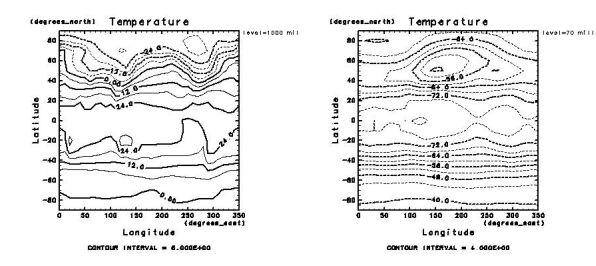</a><br>

<hr>
<a name="h2:ggraph konasi1">
<p><h2>GGraphを使いこなす(その1)</h2><br>
</a>

<p> 再び可視化の話題に戻る. 

<a name="h3:graph_startup">
<p><h3>読み込みファイルの活用</h3><br>
</a>

<p>
上述の <a href="#souce .irbrc_ggraph">GGraph 用 irb スタートアップファイル</a>
の利用は irb のみに限る必要はない. 下のように通常プログラムにおいても,
GGraph 利用時の処理をまとめたものとして用いることができる.
但し, スタートアップファイルの中身を書き換えると実行内容が変るので,
長く取っておくプログラムに利用することは薦めない.
また, 対話処理とプログラム実行では異なる設定が好ましい場合もあるだろうから
(例えば DCL のパラメター 'lwait' は, 通常は変更しないのがよかろう),
実際には irb 用のとは別にスタートアップファイルを用意するのが良いだろう.

<a name='contour1000mb_2.rb'></a>
<p><a href="contour1000mb_2.rb">contour1000mb_2.rb</a>
<table width=80%><tr><td><pre class="source">
 1: require File.expand_path("~/.irbrc_ggraph.rb")  # irb用のを流用
 2: gphys = GPhys::IO.open('T.jan.nc', 'T')
 3: GGraph.contour( gphys )
 4: DCL.grcls
</pre></td></tr></table>
</p><br>

<p> ここで <tt>File.expand_path</tt> は <tt>~</tt>
をホームディレクトリーとして展開するために用いている.

<a name="h3:graph option">
<p><h3>描画オプション</h3><br>
</a>

<p> とりあえず, <a href="#line_2">上で書いた折れ線</a>において, 
右上枠外のメッセージ（"lon=130.0 degrees_east" 等） を表示しないよ
うにしてみよう. そうすれば表示する文字にアンダースコアーが含まれなくなるので, 
制御文字解釈を抑制しなくても良い：
</p><br>

<p><a href="line_4.rb">line_4.rb</a>
<table width=80%><tr><td><pre class="source">
1: require "numru/ggraph"
2: include NumRu
3: gphys = GPhys::IO.open('T.jan.nc', 'T')
4: DCL.gropn(1)
5: DCL.uzfact(0.7)
6: GGraph.set_fig( 'itr'=> 2 )
7: GGraph.line( gphys.cut(135,35,false), true, 'exchange'=>true, 'annot'=>false )
8: DCL.grcls
</pre></td></tr></table>
<br>

<p> ここではオプション 'annotate' を false にした. オプション名は, 前方一致で後
ろを省略できる(勿論2つ以上のオプション名にマッチするような省略はできない). 
</p><br>

<p><a href='line_4.png'>line_4.rb実行結果<br>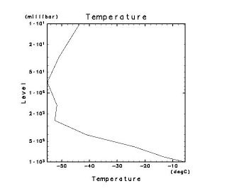</a><br>


<a name="h3:option shikumi">
<p><h3>描画メソッドのオプションの仕組み</h3><br>
</a>

<p> これまで, 描画メソッドのオプションが幾つか出てきたが, 
<tt>'exchange'=>true</tt> といった書式に戸惑ったかもしれないので, 解説する. 
上のプログラムにおける

<table width=80%><tr><td><pre class="source">
GGraph.line( gphys.cut(135,35,false), true, 'exchange'=>true, 'annot'=>false )
</pre></td></tr></table>

<p>は, 

<table width=80%><tr><td><pre class="source">
GGraph.line( gphys.cut(135,35,false), true, {'exchange'=>true, 'annot'=>false})
</pre></td></tr></table>

<p>の省略形である(Rubyの文法上そうなっている). そして, 

<table width=80%><tr><td><pre class="source">
{'exchange'=>true, 'annot'=>false}
</pre></td></tr></table>

<p>は, 連想配列(Hash)の定義を意味する. つまり, 
引数の最後に key => value を連ねたものは, 連想配列の定義と
見なされるのである. 
上の例では, 文字列 'exchange' に対し true を, 文字列 'annot' に対し false
を割り当てる連想配列が作られる. 
というわけで, 下のように分解すると分かりやすいであろう. 

<table width=80%><tr><td><pre class="source">
hash = {'exchange'=>true, 'annot'=>false}
GGraph.line( gphys.cut(135,35,false), true, hash )
</pre></td></tr></table>

つまり, GGraph.line の３番目の引数に連想配列を与えているだけで, 
キーワード引数（順番でなく名前で識別する引数）を使っているの
ではない. Ruby の文法にはキーワード引数は存在しないが, 
連想配列を使って

<table width=80%><tr><td><pre class="source">
GGraph.line( gphys.cut(135,35,false), true, 'exchange'=>true, 'annot'=>false )
</pre></td></tr></table>

のように表現できるということで, 実質的にはキーワード引数が使えるように
なっているのである. 
</p><br>

<p> 連想配列 Hash においては, 「キー」は完全一致でなければならないが, 
GGraph では前方一致で済むよう工夫している. それを支えるのは, 
GPhys 本体ではなく <a href="http://ruby.gfd-dennou.org/products/misc" target=_top>
Misc ライブラリー</a> に含まれている, KeywordOpt 並びにそのサブクラス
である KeywordOptAutoHelp である. Miscライブラリーは, Rubyプログラミン
グ全般を支援する, 一般性の高いライブラリーを集めたものである. 

<a name="h3:option default">
<p><h3>オプションのデフォルト値を知る</h3><br>
</a>

<p> 各メソッドのオプションのデフォルト値は, 
<a href="http://ruby.gfd-dennou.org/products/gphys/doc/ggraph.html" target=_top>GGraph
マニュアル</a>に載っているが, 以下のようにも調べられる. 
ここでは, Ruby の対話シェル irb を使おう. 以下で <tt>irb(main):001:0></tt>
等は irb のプロンプトである. プロンプトのない行は, irb による出力である. 
</p><br>

<table width=80%><tr><td><pre class="source">
% <span class="command">irb</span>
irb(main):001:0> <span class="command">require "numru/ggraph"</span>
=> true
irb(main):002:0> <span class="command">include NumRu</span>
=> Object
irb(main):003:0> <span class="command">GGraph.line( nil, true, 'help'=>true )</span>
<< Description of options >>
  option name   default value   # description:
  "title"       nil     # Title of the figure(if nil, internally
                        # determined)
  "annotate"    true    # if false, do not put texts on the right
                        # margin even when newframe==true
  "exchange"    false   # whether to exchange x and y axes
  "index"       1       # line/mark index
  "type"        1       # line type
  "label"       nil     # if a String is given, it is shown as the label
  "max" nil     # maximam data value
  "min" nil     # minimam data value
  "help"        false   # show help message if true
 Current values={"annotate"=>true, "help"=>true, "title"=>nil, "type"=>1, "max"=>nil, "exchange"=>false, "index"=>1, "min"=>nil, "label"=>nil}
NumRu::Misc::HelpMessagingException: ** help messaging done **
        from /usr/local/lib/ruby/site_ruby/1.8/numru/misc/keywordopt.rb:343:in `interpret'
        from /usr/local/lib/ruby/site_ruby/1.8/numru/ggraph.rb:2389:in `line'
        from (irb):3
irb(main):004:0>
</pre></td></tr></table>
<br>

<p> 上では, まずお約束の２行（<tt>require "numru/ggraph"</tt> と
<tt>include NumRu</tt>）を打ち込んだ後, <tt>GGraph.line</tt> を
オプション <tt>'help'=>true</tt> を指定して実行している. すると, 
その下のに示されたようなメッセージが表示される. このとき実行は中断され, 
描画は行われないので, データはダミーで良い. 上では, nil を与えている
(<tt>GGraph.line</tt>の第１引数). 
</p><br>

<p> それでは引き続き, 他の描画メソッドのオプションを表示してみよう. 
</p><br>

<table width=80%><tr><td><pre class="source">
irb(main):004:0> <span class="command">GGraph.contour( nil, true, 'help'=>true )</span>
<< Description of options >>
  option name   default value   # description:
  "title"       nil     # Title of the figure(if nil, internally
                        # determined)
  "annotate"    true    # if false, do not put texts on the right
                        # margin even when newframe==true
  "transpose"   false   # if true, exchange x and y axes
  "min" nil     # minimum contour value
  "max" nil     # maximum contour value
  "nlev"        nil     # number of levels
  "interval"    nil     # contour interval
  "nozero"      nil     # delete zero contour
  "coloring"    false   # set color contours with ud_coloring
  "clr_min"     13      # (if coloring) minimum color id
  "clr_max"     100     # (if coloring) maximum color id
  "help"        false   # show help message if true
  "levels"      nil     # contour levels (Array/NArray of Numeric)
  "index"       nil     # (if levels) line index(es) (Array/NArray of
                        # integers, Integer, or nil)
  "line_type"   nil     # (if levels) line type(s) (Array/NArray of
                        # integers, Integer, or nil)
  "label"       nil     # (if levels) contour label(s) (Array/NArray of
                        # String, String, true, false, nil). nil is
                        # recommended.
  "label_height"        nil     # (if levels) label height(s) (Array/NArray
                        # of Numeric, Numeric, or nil). nil is recommended.
 Current values={"label_height"=>nil, "annotate"=>true, "help"=>true, "title"=>nil, "coloring"=>false, "transpose"=>false, "max"=>nil, "nlev"=>nil, "line_type"=>nil, "min"=>nil, "clr_max"=>100, "index"=>nil, "levels"=>nil, "interval"=>nil, "nozero"=>nil, "label"=>nil, "clr_min"=>13}
NumRu::Misc::HelpMessagingException: ** help messaging done **
        from /usr/local/lib/ruby/site_ruby/1.6/numru/misc/keywordopt.rb:343:in `interpret'
        from /usr/local/lib/ruby/site_ruby/1.6/numru/ggraph.rb:1350:in `contour'
        from (irb):4
irb(main):005:0> 
</pre></td></tr></table>
<br>

<p>この結果からわかるように, 
実行中断は <tt>NumRu::Misc::HelpMessagingException</tt> 
という例外を上げることで行われる. irb を使っている場合, 例外が上がると
制御がユーザーに戻り次のプロンプトが表示される. プログラムをファイルに
する場合, 通常は例外が上がると実行が中断する. 中断させたくない場合, 
下のように begin 〜 rescure 〜 end 節で保護すればよい. 
</p><br>

<a name='help_ggraph'></a>
<p><a href="help_ggraph.rb">help_ggraph.rb</a>
<table width=80%><tr><td><pre class="source">
require "numru/ggraph"
include NumRu
begin
  print "\n** optoions of  GGraph.line **\n"
  GGraph.line( nil, true, 'help'=>true )
rescue
end
begin
  print "\n** optoions of  GGraph.contour **\n"
  GGraph.contour( nil, true, 'help'=>true )
rescue
end
</pre></td></tr></table>
<br>

<p>実行結果は irb の場合と同様なので省略する. 
helpオプションを付けられるその他のメソッドは, 
<tt>GGraph.fig</tt>, <tt>GGraph.axes</tt>, <tt>GGraph.mark</tt>,
<tt>GGraph.tone</tt> である. 
</p><br>


<hr>
<a name="h2:ggraph konasi2">
<p><h2>GGraphを使いこなす(その2)</h2><br>
</a>

<p> 上記の help メッセージ表示で分かるように, 
GGraph の描画メソッドには様々なオプションがある. 
オプションによる指定はその時に限りだが, 
デフォルト値を変えることで, その後ずっと有効な設定もできる. 
以下に例を示す. 

<a name="h3:contour-tone auto">
<p><h3>コンター／トーン (レベル自動生成)</h3><br>
</a>

<p>次のプログラムを実行しよう. 

<a name='contour101'>
<p><a href="contour101.rb">contour101.rb</a>
</a>
<table width=80%><tr><td><pre class="source">
 1: require "numru/ggraph"
 1: include NumRu
 2: gphys = GPhys::IO.open('T.jan.nc', 'T')
 3: 
 4: #< DCLのオープンと設定 >
 5: DCL.gropn(1)
 6: DCL.sldiv('y',2,2)           # 2x2に画面分割, 'y'=yoko: 左上→右上→左下...
 7: DCL.sgpset('lcntl', false)   # 制御文字を解釈しない
 8: DCL.sgpset('lfull',true)     # 全画面表示
 9: DCL.uzfact(0.75)             # 座標軸の文字列サイズを 0.75 倍
10: DCL.sgpset('lfprop',true)    # プロポーショナルフォントを使う
11: 
12: #< GGraph による 描画 >
13: GGraph.set_fig('viewport'=>[0.15,0.75,0.15,0.6])    # set_*: ずっと有効な設定
14: # 1枚目
15: GGraph.contour( gphys )
16: GGraph.tone( gphys, false, 'ltone'=>false )        # ゼロ以下にシェーディング
17: # 2枚目
18: GGraph.next_fig('itr'=>2 )                         # next_*: 次だけ有効な設定
19: GGraph.contour( gphys.average(0), true, 'color'=>true )        # 虹色コンター
20: # 3枚目
21: GGraph.set_axes('xunits'=>'','yunits'=>'')  # 空文字列 --> 軸の単位は書かない
22: GGraph.tone( gphys.cut(true,true,70) )        # tone のデフォルトはカラー表示
23: GGraph.contour( gphys.cut(true,true,70), false )  # 第2引数 false -> 重ね書き
24: # 4枚目
25: GGraph.set_linear_contour_options( 'min'=>0, 'nlev'=>20 )  
26:                  # contourのデフォルト変更. 次回のみ有効なnext_linear..もある
27: GGraph.contour( gphys.average(0) )
28: 
29: #< おしまい >
30: DCL.grcls
</pre></td></tr></table>

<p>実行すると, 下のようにコンター及び色塗りの図が4枚表示されるは
ずである. 
各行の解説はプログラム中に書いてあるのであまり必要なかろう. 
ここでは一部だけ解説する. 
第16行目では <tt>'ltone'=>false</tt> により, 
値がゼロ以下の領域に対するシェーディングとなる. 
これは DCL のトーンライブラリー UEPACK のオプションそのままである. 
但し, UEPACK では 'ltone' == false がデフォルトであるのに対し, 
GGraph では 'ltone' == true をデフォルトにしている. 
</p><br>

<p>
さらに, 全般にかかわることを補足する. GGraphでは, 一般に描画メソッド 
<tt><i>hogehoge</i></tt> に対し, オプションのデフォルト値を変更する
<tt>set_<i>hogehoge</i></tt> が存在する. また, オプションとするには
長すぎたり, あるいはオプションを使うこと自体が好みでない人のために, 
<tt>next_<i>hogehoge</i></tt> というメソッドが用意してあり, 
次回の <tt><i>hogehoge</i></tt> のみに影響を与える
（つまり結果は <tt><i>hogehoge</i></tt> にオプションを与えるのと同じ）. 
ただし, <tt>contour</tt>の場合, 自動レベル生成に関わる
<tt>(set|next)_linear_contour_options</tt> と, レベルを陽に指定する
<tt>(set|next)_contour_levels</tt> に分かれている. 色塗り／シェーディング
を行う <tt>tone</tt> についても同様. 
</p><br>

<p><a href='contour101.png'>contour101.rb実行結果<br>
   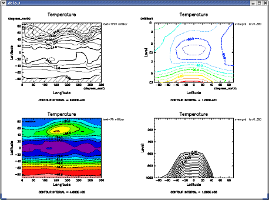</a><br>
</p><br>

<p>
<tt>contour</tt> では, オプション
<tt>coloring</tt>を設定すると, カラーコンターを生成する. その場合, 
オプションでコンターの最小値と最大値に割り当てる色を指定できる
(<tt>clr_min</tt> と <tt>clr_max</tt>). 
</p><br>

<p>
コンター／トーンレベルは, 次項で説明する明示的なレベル指定を行わなければ, 
等間隔に生成される. 
その際, 完全お任せも出来るし, (1)最小値(<tt>min</tt>), 
(2)最大値(<tt>max</tt>), (3)間隔(<tt>interval</tt>)または本数
(<tt>nlev</tt>), の３つのパラメターの
うち任意個を指定して制御することもできる. 
間隔と本数の両方を指定すると, 後者は無視される. 
最終的な生成は <tt>DCL.udgcl[ab]</tt>, <tt>DCL.uegtl[ab]</tt>
に任されるので, 指定した最大／最小値は切りのよい値に変換される. 
当然, <tt>icycle</tt> などの <tt>(UD|UE)PACK</tt> のパラメターも解釈される. 
<tt>tone</tt> においてシェーディングを行うために, オプション
<tt>ltone</tt> を <tt>false</tt> にすると, 単にレベル生成をやめるだけ
なので, 実はもしも <tt>UEPACK</tt> のパラメター <tt>ltone</tt> が 
<tt>true</tt> になっていれば, やはりカラートーンが表示されることになる
（という注意を喚起するため, あえてこの分かりにくい名前をそのまま採用
している）. 
<tt>contour</tt> に限り, 値がゼロのコンターを取り除くオプションがある
(<tt>nozero</tt>). 
</p><br>

<a name="h3:color bar">
<p><h3>カラーバー</h3><br>
</a>

<p> <tt>GGraph.coloar_bar</tt> は直前の tone
描画に関するカラーバーを表示する
(直前のを用いず, 陽にレベルとパターンを指定することもできるが,
あまり使わないだろう). 下にカラーバーの描画例を示す.
多彩な指定が出来ることが分かるであろう.
</p><br>

<a name='color_bar.rb'>
<p><a href="color_bar.rb">color_bar.rb</a>
</a>
<table width=80%><tr><td><pre class="source">
 1: require "numru/ggraph"
 2: include NumRu
 3: gphys = GPhys::IO.open('T.jan.nc', 'T')
 4: 
 5: #< DCLのオープンと設定 >
 6: DCL.gropn(1)
 7: DCL.sldiv('y',2,2)           # 2x2に画面分割, 'y'=yoko: 左上→右上→左下...
 8: DCL.sgpset('isub', 96)       # 下付を示す制御文字変更: '_' --> '`'
 9: DCL.sgpset('lfull',true)     # 全画面表示
10: DCL.uzfact(0.75)             # 座標軸の文字列サイズを 0.75 倍
11: DCL.sgpset('lfprop',true)    # プロポーショナルフォントを使う
12: 
13: #< GGraph による 描画 >
14: GGraph.set_fig('viewport'=>[0.15,0.7,0.2,0.6])    # set_*: ずっと有効な設定
15: # 1枚目
16: GGraph.tone( gphys.cut(true,true,850) )
17: GGraph.contour( gphys.cut(true,true,850), false )
18: GGraph.color_bar                          # カラーバー (デフォルトは縦)
19: 
20: # 2枚目
21: GGraph.next_fig('viewport'=>[0.2,0.75,0.2,0.6])
22: GGraph.tone( gphys.cut(true,true,850) )
23: GGraph.contour( gphys.cut(true,true,850), false )
24: GGraph.color_bar('left'=>true,'labelintv'=>1)   # 左側に表示, 全部ラベル(∵1個おき)
25: 
26: # 3枚目
27: GGraph.next_fig('itr'=>2 )
28: GGraph.tone( gphys.mean(0), true, 'int'=>4)
29: GGraph.color_bar('vlength'=>0.5,"landscape"=>true,'tickintv'=>0)
30:                     # 長さ指定, 横に表示, tick markなし(0の場合の特例)
31: 
32: # 4枚目
33: GGraph.next_fig('itr'=>2 )
34: rmiss = DCL.glpget('rmiss')
35: GGraph.tone( gphys.mean(0), true, 'levels'=>
36:              [rmiss,-70,-60,-50,-40,-30,-20,-10,0,10,20,rmiss] )
37: GGraph.color_bar("voff"=>0.04)        # ちょっと余分に横に離す
38:                                       # ±無限大は GrADS 風に三角になる
39: 
40: #< おしまい >
41: DCL.grcls
</pre></td></tr></table>

<p><a href='color_bar.png'>color_bar.rb実行結果<br>
   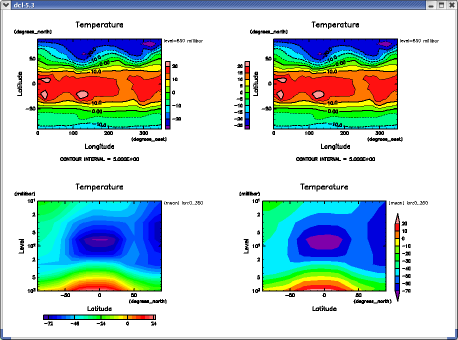</a><br>
</p><br>

<a name="h3:map projection">
<p><h3>地図投影</h3><br>
</a>

<p> DCL には地図投影機能がある．
GGraph では，それを使いやすい形にラップして提供する．
投影法は，座標変換番号で指定する．
GGraph での地図投影実践の前に，まずは，<a 
href="http://ruby.gfd-dennou.org/products/ruby-dcl/ruby-dcl-doc/grph1/node8.html">DCLにおける地図投影法の解説</a> を一読されたい．
</p><br>

<p>
DCLがサポートする地図投影法は下記である．
<ul> 
<li><b>円筒図法</b> 
     <div ALIGN="CENTER"> 
<table CELLPADDING="3" BORDER="1"> 
<tr><td ALIGN="CENTER">番号</td> 
<td ALIGN="CENTER">図   法</td> 

<td ALIGN="CENTER">正積</td> 
<td ALIGN="CENTER">正角</td> 
<td ALIGN="CENTER">正距</td> 
</tr> 
<tr><td ALIGN="CENTER">10</td> 
<td ALIGN="CENTER">正距円筒図法</td> 
<td ALIGN="CENTER">×</td> 
<td ALIGN="CENTER">×</td> 
<td ALIGN="CENTER">経線</td> 

</tr> 
<tr><td ALIGN="CENTER">11</td> 
<td ALIGN="CENTER">メルカトール図法</td> 
<td ALIGN="CENTER">×</td> 
<td ALIGN="CENTER">○</td> 
<td ALIGN="CENTER">×</td> 
</tr> 
<tr><td ALIGN="CENTER">12</td> 
<td ALIGN="CENTER">モルワイデ図法</td> 
<td ALIGN="CENTER">○</td> 

<td ALIGN="CENTER">×</td> 
<td ALIGN="CENTER">×</td> 
</tr> 
<tr><td ALIGN="CENTER">13</td> 
<td ALIGN="CENTER">ハンメル図法</td> 
<td ALIGN="CENTER">○</td> 
<td ALIGN="CENTER">×</td> 
<td ALIGN="CENTER">×</td> 
</tr> 
<tr><td ALIGN="CENTER">14</td> 

<td ALIGN="CENTER">エッケルト第6図法</td> 
<td ALIGN="CENTER">○</td> 
<td ALIGN="CENTER">×</td> 
<td ALIGN="CENTER">×</td> 
</tr> 
<tr><td ALIGN="CENTER">15</td> 
<td ALIGN="CENTER">北田楕円図法</td> 
<td ALIGN="CENTER">○</td> 
<td ALIGN="CENTER">×</td> 

<td ALIGN="CENTER">×</td> 
</tr> 
</table></div> 
<p> 
<li><b>円錐図法</b> 
     <div ALIGN="CENTER"> 
<table CELLPADDING="3" BORDER="1"> 
<tr><td ALIGN="CENTER">番号</td> 
<td ALIGN="CENTER">図    法</td> 
<td ALIGN="CENTER">正積</td> 
<td ALIGN="CENTER">正角</td> 

<td ALIGN="CENTER">正距</td> 
</tr> 
<tr><td ALIGN="CENTER">20</td> 
<td ALIGN="CENTER">正距円錐図法</td> 
<td ALIGN="CENTER">×</td> 
<td ALIGN="CENTER">×</td> 
<td ALIGN="CENTER">経線</td> 
</tr> 
<tr><td ALIGN="CENTER">21</td> 
<td ALIGN="CENTER">ランベルト正積円錐図法</td> 

<td ALIGN="CENTER">○</td> 
<td ALIGN="CENTER">×</td> 
<td ALIGN="CENTER">×</td> 
</tr> 
<tr><td ALIGN="CENTER">22</td> 
<td ALIGN="CENTER">ランベルト正角円錐図法</td> 
<td ALIGN="CENTER">×</td> 
<td ALIGN="CENTER">○</td> 
<td ALIGN="CENTER">×</td> 

</tr> 
<tr><td ALIGN="CENTER">23</td> 
<td ALIGN="CENTER">ボンヌ図法</td> 
<td ALIGN="CENTER">○</td> 
<td ALIGN="CENTER">×</td> 
<td ALIGN="CENTER">×</td> 
</tr> 
</table></div> 
<p> 
<li><b>方位図法</b> 
     <div ALIGN="CENTER"> 

<table CELLPADDING="3" BORDER="1"> 
<tr><td ALIGN="CENTER">番号</td> 
<td ALIGN="CENTER">図    法</td> 
<td ALIGN="CENTER">正積</td> 
<td ALIGN="CENTER">正角</td> 
<td ALIGN="CENTER">正距</td> 
</tr> 
<tr><td ALIGN="CENTER">30</td> 
<td ALIGN="CENTER">正射図法</td> 
<td ALIGN="CENTER">×</td> 

<td ALIGN="CENTER">×</td> 
<td ALIGN="CENTER">×</td> 
</tr> 
<tr><td ALIGN="CENTER">31</td> 
<td ALIGN="CENTER">ポーラーステレオ図法</td> 
<td ALIGN="CENTER">×</td> 
<td ALIGN="CENTER">○</td> 
<td ALIGN="CENTER">×</td> 
</tr> 
<tr><td ALIGN="CENTER">32</td> 

<td ALIGN="CENTER">正距方位図法</td> 
<td ALIGN="CENTER">×</td> 
<td ALIGN="CENTER">×</td> 
<td ALIGN="CENTER">方位線</td> 
</tr> 
<tr><td ALIGN="CENTER">33</td> 
<td ALIGN="CENTER">ランベルト正積方位図法</td> 
<td ALIGN="CENTER">○</td> 
<td ALIGN="CENTER">×</td> 

<td ALIGN="CENTER">×</td> 
</tr> 
</table></div></ul> 
</p><br>

<p>
GGraph ではそれぞれに対し，「よきに計らう」デフォルト設定を用意
してある．まずは簡単なプログラムで，いくつかの投影法で描画してみよう．
</p><br>

<a name='map_proj1.rb'>
<p><a href="map_proj1.rb">map_proj1.rb</a>
</a>
<table width=80%><tr><td><pre class="source">
 1: itr = ARGV[0] ? ARGV[0].to_i : 10
 2: 
 3: require "numru/ggraph"
 4: include NumRu
 5: gphys = GPhys::IO.open('T.jan.nc', 'T')
 6: DCL.gropn(1)
 7: DCL.sgpset('lcntl', false)
 8: DCL.sgpset('lclip', true)
 9: DCL.uzfact(0.7)
10: DCL.sgpset('lfull',true)
11: GGraph.set_fig 'itr'=>itr, 'viewport'=>[0.15,0.85,0.1,0.6]
12: GGraph.set_map 'coast_world'=>true
13: GGraph.tone( gphys )
14: DCL.grcls
</pre></td></tr></table>

このプログラムは，第一引数として地図投影番号をとる．
円筒図法，円錐図法，方位図法を代表して，正距円筒図法(10), 
正距円錐図法(20), 正射図法(30) を試してみる．

<table width=80%><tr><td><pre class="source">
% <span class="command">ruby map_proj1.rb 10</span>
% <span class="command">ruby map_proj1.rb 20</span>
% <span class="command">ruby map_proj1.rb 30</span>
</pre></td></tr></table>
<br>

<p> それぞれの結果を示す．
<table><tr><td>
<a href='map_proj1_itr10.png'><br>
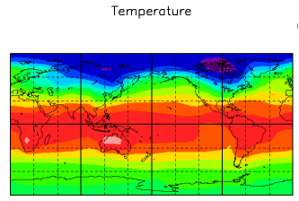<br>ruby map_proj1.rb 10 実行結果</a>
</td>
</tr><tr>
<td>
<a href='map_proj1_itr20.png'><br>
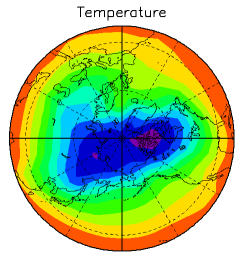<br>ruby map_proj1.rb 20 実行結果</a>
</td>
<td>
<a href='map_proj1_itr30.png'><br>
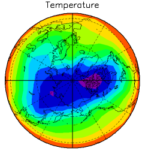<br>ruby map_proj1.rb 30 実行結果</a>
</td></table>
</p><br>

<p>
<h4>いくつかの特別な投影法について</h4>

<p> 

ポーラーステレオ図法(番号31)の場合，デフォルトでは画面全体に作図される
（定義範囲が無限遠まで）．ビューポートに描画を納めるためには，

<table width=80%><tr><td><pre class="source">
DCL.sgpset('lclip', true)
</pre></td></tr></table>

を指定する．
</p><br>

<p> 
正距円筒図法（番号10）は，いわゆる緯度経度座標である．この場合，
linear-linear直交座標（番号10）用の座標軸を書くことができる．
<tt>GGraph</tt> のメソッド <tt>contour, tone, line</tt> において，オプション
<tt>'map_axes'</tt> を <tt>true</tt> に指定する．
</p><br>

<a name='map_axes_itr10.rb'>
<p><a href="map_axes_itr10.rb">map_axes_itr10.rb</a>
</a>
<table width=80%><tr><td><pre class="source">
 1: require "numru/ggraph"
 2: include NumRu
 3: gphys = GPhys::IO.open('T.jan.nc', 'T')
 4: DCL.gropn(1)
 5: DCL.sgpset('lcntl', false)
 6: DCL.sgpset('lclip', true)
 7: DCL.uzfact(0.7)
 8: DCL.sgpset('lfull',true)
 9: GGraph.set_fig 'itr'=>10, 'viewport'=>[0.15,0.85,0.1,0.6]
10: GGraph.set_map 'coast_japan'=>true
11: GGraph.tone( gphys.cut('lon'=>120..150,'lat'=>20..50), true, 'map_axes'=>true )
12: DCL.grcls
</pre></td></tr></table>

<p><a href='map_axes_itr10.png'>map_axes_itr10.rb実行結果<br>
   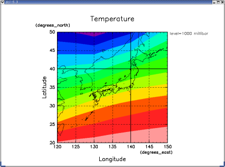</a><br>
</p><br>


<p>
<h4>地図投影関連オプション</h4>
</p><br>

<p>
地図投影関係のオプションは，<tt>GGraph::fig</tt> と
<tt>GGraph::map</tt> にある．
<tt>GGraph::fig</tt>の地図関係オプションは下記：
<ul>
 <li> <tt>map_radius</tt>: 円錐/方位図法の場合の地図半径（度）
 <li> <tt>window</tt>, <tt>map_window</tt>: 円筒座標系の場合のの緯度軽度範囲
      (<tt>map_fit=true</tt>の場合前者だけを用いれば良い)
 <li> <tt>map_axis</tt> 地図の「軸」に関する DCL::umscnt の３パラメター
</ul>

<p>
<tt>GGraph::map</tt>の主なオプションは下記：

<ul>
 <li> <tt>coast_world</tt>, <tt>coast_japan</tt>,
      <tt>border_world</tt>, <tt>plate_world</tt>, 
      <tt>state_usa</tt>, <tt>pref_japan</tt> : true なら世界地図，日本地図，
      国境，プレート境界，米国州境，県境をかく
 <li> <tt>fill</tt> : 地図を塗り潰す
 <li> <tt>grid</tt>: 緯度経度格子をかく
 <li> <tt>dgridmj</tt>, <tt>dgridmn</tt> : 緯度経度格子間隔(太線，細線)
</ul>

<p>
詳しくは，下のようにオプション <tt>help</tt> で表示される．

<table width=80%><tr><td><pre class="source">
>> <span class="command">require "numru/ggraph"</span>
=> true
>> <span class="command">NumRu::GGraph.fig nil, nil, 'help'=>true</span>
<< Description of options >>
  option name   default value   # description:
  "new_frame"   true    # whether to define a new frame by DCL.grfrm
                        # (otherwise, DCL.grfig is called)
  "itr" 1       # coordinate transformation number
  "viewport"    [0.2, 0.8, 0.2, 0.8]    # [vxmin, vxmax, vymin, vymax]
  "window"      nil     # (for itr<10,>50) [uxmin, uxmax, uymin, uymax].
                        # each element allowd nil (only for itr<5,>50)
  "xreverse"    "positive:down,units:hPa"       # (for itr<10,>50) Assign
                        # max value to UXMIN and min value to UXMAX if
                        # condition is satisfied (nil:never, true:always,
                        # String: when an attibute has the value specified
                        # ("key:value,key:value,..")
  "yreverse"    "positive:down,units:hPa"       # (for itr<10,>50) Assign
                        # max value to UYMIN and min value to UYMAX if
                        # condition is satisfied (nil:never, true:always,
                        # String: when an attibute has the value specified
                        # ("key:value,key:value,..")
  "similar"     nil     # 3-element float array for similar
                        # transformation in a rectangular curvilinear
                        # coordinate, which is fed in
                        # DCL:grssim:[simfac,vxoff,vyoff],  where simfac
                        # and [vxoff,vyoff] represent scaling factor and
                        # origin shift, respectively.
  "map_axis"    nil     # (for all map projections) 3-element float
                        # array to be fed in DCL::umscnt: [uxc, uxy, rot],
                        # where [uxc, uyc] represents the tangential point
                        # (or the pole at top side for cylindrical
                        # projections), and rot represents the rotation
                        # angle. If nil, internally determined. (units:
                        # degrees)
  "map_radius"  nil     # (for itr>=20: conical/azimuhal map
                        # projections) raidus around the tangential point.
                        # (units: degrees)
  "map_fit"     nil     # (Only for itr=10(cylindrical) and 11
                        # (Mercator)) true: fit the plot to the data window
                        # (overrides map_window and map_axis); false: do
                        # not fit (then map_window and map_axis are used);
                        # nil: true if itr==10, false if itr==11
  "map_window"  [-180, 180, -75, 75]    # (for itr<20: cylindrical
                        # map projections) lon-lat window [lon_min,
                        # lon_max, lat_min, lat_max ] to draw the map
                        # (units: degres)
  "help"        false   # show help message if true
 Current values={"map_window"=>[-180, 180, -75, 75], "help"=>true, "similar"=>nil, "map_axis"=>nil, "window"=>nil, "new_frame"=>true, "itr"=>1, "map_fit"=>nil, "yreverse"=>"positive:down,units:hPa", "viewport"=>[0.2, 0.8, 0.2, 0.8], "xreverse"=>"positive:down,units:hPa", "map_radius"=>nil}
NumRu::Misc::HelpMessagingException: ** help messaging done **
        from /usr/local/lib/ruby/site_ruby/1.8/numru/misc/keywordopt.rb:386:in `interpret'
        from /usr/local/lib/ruby/site_ruby/1.8/numru/ggraph.rb:2261:in `fig'
        from (irb):5
>> <span class="command">NumRu::GGraph.map 'help'=>true</span>
<< Description of options >>
  option name   default value   # description:
  "lim" true    # draw map lim (t or f)
  "grid"        true    # draw map grid (t or f)
  "vpt_boundary"        false   # draw viewport boundaries (f, t or
                        # 1,2,3.., representing the line width)
  "wwd_boundary"        false   # draw worksation window boundaries (f, t
                        # or 1,2,3.., representing the line width)
  "fill"        false   # fill the map if coast_world or coast_japan is
                        # true (t or f)
  "coast_world" false   # draw world coast lines (t or f)
  "border_world"        false   # draw nation borders (t or f)
  "plate_world" false   # draw plate boundaries (t or f)
  "state_usa"   false   # draw state boundaries of US (t or f)
  "coast_japan" false   # draw japanese coast lines (t or f)
  "pref_japan"  false   # draw japanese prefecture boundaries (t or
                        # f)
  "dgridmj"     nil     # the interval between the major lines of
                        # latitudes and longitudes. If nil, internally
                        # determined. (units: degrees) (this is a UMPACK
                        # parameter, which is nullified when uminit or
                        # grfrm is called)
  "dgridmn"     nil     # the interval between the minor lines of
                        # latitudes and longitudes. If nil, internally
                        # determined. (units: degrees) (this is a UMPACK
                        # parameter, which is nullified when uminit or
                        # grfrm is called)
  "help"        false   # show help message if true
 Current values={"dgridmn"=>nil, "help"=>true, "border_world"=>false, "lim"=>true, "wwd_boundary"=>false, "fill"=>false, "coast_japan"=>false, "dgridmj"=>nil, "vpt_boundary"=>false, "coast_world"=>false, "plate_world"=>false, "grid"=>true, "state_usa"=>false, "pref_japan"=>false}
NumRu::Misc::HelpMessagingException: ** help messaging done **
        from /usr/local/lib/ruby/site_ruby/1.8/numru/misc/keywordopt.rb:386:in `interpret'
        from /usr/local/lib/ruby/site_ruby/1.8/numru/ggraph.rb:2546:in `map'
        from (irb):6
</pre></td></tr></table>


<h4>さらなるサンプル</h4>

<p> <a href='map_projection.rb'>このサンプルプログラム<a>
    を走らすと，下の５枚の図が得られる．ほしい機能を使っていそうな部分が
    あれば参考にされたい．
<table>
 <tr>
   <td> 
    <a href='map_projection_p1.png'>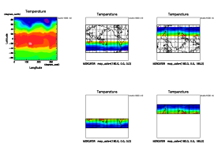<br>1枚目</a>
   </td><td>
    <a href='map_projection_p2.png'>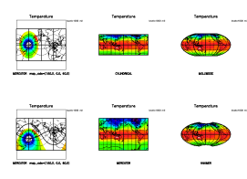<br>2枚目</a>
  </td><td>
    <a href='map_projection_p3.png'>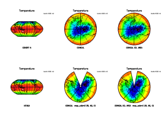<br>3枚目</a>
  </td></tr><tr><td>
    <a href='map_projection_p4.png'>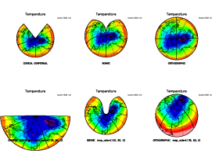<br>4枚目</a>
  </td><td>
    <a href='map_projection_p5.png'>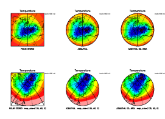<br>5枚目</a>
  </td><td>
 </tr>
</td></table>
</p><br>

<a name="h3:pressure why">
<p><h3>圧力軸だけは値の大きいほうが左／下に来るのはなぜ？</h3><br>
</a>

<p>
圧力は確かに大きいほど高度が低いので, そうなると好都合ではあるが, 
何も指定しないのにそうなるのは何か不透明な操作が行われているからであろうか？
実は, そうすべきということは, 元の NetCDF ファイルに書いてあるので, 
それを解釈しているまでである. <a href="#ncdump T.jan.nc">T.jan.nc の
ncdump による表示</a>をみると, 変数 <tt>level</tt> にだけ, 
<tt>positive</tt> 属性があり, 値が <tt>"down"</tt> となっている. 
これは, NetCDF ユーザーガイドにこそないものの, 
多くのコンベンションで標準的な属性となっている
(<a href="http://www.gfd-dennou.org/arch/gtool4/conventions/" target=_top>gtool4
NetCDF 規約</a>を参照のこと). 
</p><br>

<p>では, <tt>positive</tt> 属性を付けていないデータはどうすればい
いのだろうか. GGraph はそれも配慮して作られているので大丈夫である. 
具体的には, メソッド <tt>fig</tt> のパラメターのデフォルト値を変えればよい. 
</p><br>

<p> まずは次の, たった2行のプログラムを実行してみよう. 
（わざわざファイルにしなくても irb で十分である）
</p><br>

<a name='fig_help'>
<p><a href="fig_help.rb">fig_help.rb</a>
</a>
<table width=80%><tr><td><pre class="source">
require "numru/ggraph"
NumRu::GGraph.fig( nil, true, 'help'=>true )
</pre></td></tr></table>
<br>

<p>
すると, 以下のようにオプションのメニューが表示される. 
</p><br>

<table width=80%><tr><td><pre class="source">
% <span class="command">ruby fig_help.rb</span>
<< Description of options >>
  option name   default value   # description:
  "new_frame"   true    # whether to define a new frame by DCL.grfrm
                        # (otherwise, DCL.grfig is called)
  "itr" 1       # coordinate transformation number
  "viewport"    [0.2, 0.8, 0.2, 0.8]    # [vxmin, vxmax, vymin, vymax]
  "window"      nil     # (for itr<10,>50) [uxmin, uxmax, uymin, uymax].
                        # each element allowd nil (only for itr<5,>50)
  "xreverse"    "positive:down,units:hPa"       # (for itr<10,>50) Assign
                        # max value to UXMIN and min value to UXMAX if
                        # condition is satisfied (nil:never, true:always,
                        # String: when an attibute has the value specified
                        # ("key:value,key:value,..")
  "yreverse"    "positive:down,units:hPa"       # (for itr<10,>50) Assign
                        # max value to UYMIN and min value to UYMAX if
                        # condition is satisfied (nil:never, true:always,
                        # String: when an attibute has the value specified
                        # ("key:value,key:value,..")
  "similar"     nil     # 3-element float array for similar
                        # transformation in a rectangular curvilinear
                        # coordinate, which is fed in
                        # DCL:grssim:[simfac,vxoff,vyoff],  where simfac
                        # and [vxoff,vyoff] represent scaling factor and
                        # origin shift, respectively.
  "map_axis"    nil     # (for all map projections) 3-element float
                        # array to be fed in DCL::umscnt: [uxc, uxy, rot],
                        # where [uxc, uyc] represents the tangential point
                        # (or the pole at top side for cylindrical
                        # projections), and rot represents the rotation
                        # angle. If nil, internally determined. (units:
                        # degrees)
  "map_radius"  nil     # (for itr>=20: conical/azimuhal map
                        # projections) raidus around the tangential point.
                        # (units: degrees)
  "map_lat_range"       nil     # (for itr<20: cylindrical map projections)
                        # latitudinal range to draw the map. By default
                        # (nil), the map is drawn between 75E and 75S.
                        # (units: degres)
  "help"        false   # show help message if true
 Current values={"help"=>true, "similar"=>nil, "map_axis"=>nil, "window"=>nil, "new_frame"=>true, "itr"=>1, "map_lat_range"=>nil, "yreverse"=>"positive:down,units:hPa", "viewport"=>[0.2, 0.8, 0.2, 0.8], "xreverse"=>"positive:down,units:hPa", "map_radius"=>nil}
/usr/local/lib/ruby/site_ruby/1.8/numru/misc/keywordopt.rb:343:in `interpret': ** help messaging done ** (NumRu::Misc::HelpMessagingException)
        from /usr/local/lib/ruby/site_ruby/1.8/numru/ggraph.rb:2083:in `fig'
        from fig_help.rb:2
</pre></td></tr></table>
<br>

<p>図の左右上下の端の座標値 (<tt>uxmin, uxmax, uymin, uymax</tt>)
はオプション <tt>window</tt> で決まるので, 座標軸の左右／上下を入れ替
えたければ, これを陽に設定するというのが一法である. 
しかし, それでは様々な図を書きたい場合は不便である. 
そこで, <tt>window</tt> を設定せずに, 自動判断の規則を変えよう. 
それを行うのが, オプション <tt>xreverse</tt>, <tt>yreverse</tt> である. 
上の出力から, デフォルト値がともに "positive:down,units:hPa"
となっていることがわかる. これは, 属性 positive が存在し
てその値が "down" であるか, または 属性 units が存在してその値が
"hPa" である場合は, 左右または上下を逆にするという意味である. 
とうことで, 実はやっぱり圧力を特別扱いしていたのであるが, 
今回用いたデータでは
<tt>level</tt> の単位は hPa でなく milibarとなっているので, 
それが原因ではない. 
</p><br>

<p>
デフォルト値を例えば "units:mb,units:hPa,units:milibar" に変えれば, 
属性 units が "mb", "hPa", "milibar" のいずれかの場合に引っくり返すと
いう設定になる：

<table width=80%><tr><td><pre class="source">
GGraph.set_fig( "xrev"=>"units:mb,units:hPa,units:milibar",
                "yrev"=>"units:mb,units:hPa,units:milibar")
</pre></td></tr></table>

<p> 一方, 圧力を特別視せず, 純粋に postive だけで勝負したければ, 
"positive:down" とすれば良い. 
なお, <tt>xreverse</tt>, <tt>yreverse</tt> に <tt>nil</tt>
を設定すれば常に引っくり返しを行わず, <tt>true</tt> とすれば常に引っくり返す. 
といっても勿論 <tt>window</tt> が陽に指定されれば, それに従う. 

</p><br>

<a name="h3:tone levels">
<p><h3>トーンレベルのユーザー指定</h3><br>
</a>

<p>
GGraphでは, コンターやトーン(色塗り)のレベルを配列で陽に指定することが出来る. 
</p><br>

<p>トーンはレベルとパターン番号で指定される. パターン番号は色とトーンパター
ンを同時に指定する. その仕様は<a
href="http://ruby.gfd-dennou.org/products/ruby-dcl/ruby-dcl-doc/" target=_top>
RubyDCLのマニュアル</a> (GRPH1の「概要」)を参照のこと. 
GGraph では, トーンは <tt>GGraph.set_tone_levels</tt>
で設定するか(以後継続的に用いる場合), <tt>GGraph.tone</tt> のオプション
<tt>'levels'</tt> と <tt>'patterns'</tt> により指定する(その場限り). 
（なお, 現在の実装では, 後者を使うとそれ以前の
<tt>GGraph.set_tone_levels</tt> は無効になるが, 
そうならないように改訂する予定）

<p>それでは, やり方を例で示す. 

<a name='tone201'>
<p><a href="tone201.rb">tone201.rb</a>
</a>
<table width=80%><tr><td><pre class="source">
 1: require "numru/ggraph"
 2: include NumRu
 3: gphys = GPhys::NetCDF_IO.open('T.jan.nc', 'T')
 4: 
 5: #< DCLのオープンと設定 >
 6: DCL.gropn(1)
 7: DCL.sldiv('y',2,2)           # 2x2に画面分割, 'y'=yoko: 左上→右上→左下...
 8: DCL.sgpset('lcntl', false)   # 制御文字を解釈しない
 9: DCL.sgpset('lfull',true)     # 全画面表示
10: DCL.sgpset('lfprop',true)    # プロポーショナルフォントを使う
11: 
12: #< GGraph による 描画 >
13: GGraph.set_fig('viewport'=>[0.15,0.82,0.15,0.6])
14: # 1枚目
15: GGraph.set_tone_levels( 'levels'=>[-20,-15,-10,-5,0],
16:                         'patterns'=>[10999,20999,30999,40999] )
17: GGraph.tone( gphys )
18: # 2枚目
19: GGraph.tone( gphys, true, 'lev'=>[-20,0,20],     # レベル＆パターンを陽に指定
20:              'pat'=>[20999,40999,70999,80999] ) # パタンの方が1つ多→±∞まで
21: GGraph.contour( gphys, false, 'lev'=>[-20,0,20], 'index'=>3 )      # 参考まで
22: # 3枚目
23: GGraph.tone( gphys, true, 'lev'=>[-20,0,20], 
24:                     'pat'=>[40999,70999,80999] ) # レベルと同数→＋∞まで拡張
25: # 4枚目
26: GGraph.tone( gphys, true, 'lev'=>[-20,0,20], 
27:                     'pat'=>[40999,70999] )    # パタンのほうが1つ少→間を塗る
28: #< おしまい >
29: DCL.grcls
</pre></td></tr></table>
<br>

<p>15行目より解説する. 15〜16行目では, トーンのレベルとパターン番号を設定している. 
<tt>GGraph.set_tone_levels</tt> では, 'levels' と 'patterns'
の両方のパラメターを配列で指定する. <tt>GGraph.tone</tt>
や後述するコンターの場合と形式とあわせるためオプションの形を取っているが, 
両方とも省略出来ない（つまり本当はオプションではない）. 
レベルを設定するなら色も同時に指定しなければならない. 
17行目は, 直前の設定に従って1枚目の図を描画する. 
19〜20行目では, レベルとパターンを <tt>GGraph.tone</tt> のオプションとして
陽に指定し, ２枚目を描画している. 
指定したパターンはレベルより要素が１つ多いが, 
その場合, −∞, levels[0], levels[1], .., levels[-1], ＋∞
の間が塗られる. オプション名の後ろが省略出来るのは既に述べた通り. 
なお, トーンレベルが分かりやすいようコンターを
重ね書きした. コンターのレベル設定については後述する. 
23〜24行目は３枚目を描画する. レベルとパターンの要素数が等しいが, 
この場合 levels[0], levels[1], .., levels[-1], ＋∞ の間が塗られる. 
26〜27行目の4枚目では, パターンのほうが１つ要素が少ないので, 
levels の間が塗られる. レベルとパターンの要素数の関係が
これら以外の場合は例外が発生する. 


<p><a href='tone201.png'>tone201.rb実行結果<br>
   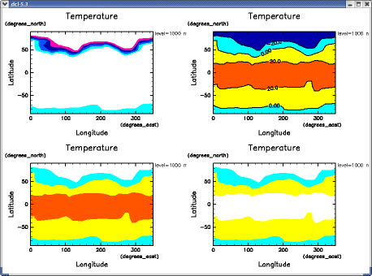</a><br>
</p><br>

<tt></tt>

<a name="h3:contour levels">
<p><h3>コンターレベルのユーザー指定</h3><br>
</a>

<p> 
コンターレベルを配列で陽に指定する方法を説明する. 
コンターの場合は, １本１本に線の太さ等, 様々なパラメターがあり, 
それらも決めねばならないが, 
GGraph では, 利用者の便を考えて可能な限り省略または簡略化できるようになっている. 
トーンの場合と同様, レベルの設定は <tt>GGraph.set_contour_levels</tt>
で設定する場合(以後継続的に用いる場合)と, 
<tt>GGraph.contour</tt> のオプションで指定する場合 (その場限り)
の２通りがある. 指定するパラメターは, 必ず必要な <tt>'levels'</tt>
に加えて, オプションで <tt>'index'</tt>, <tt>'line_type'</tt>,
<tt>'label'</tt>, <tt>'label_height'</tt> である. 
（これらは <tt>DCL.udsclv</tt> のパラメターである. 
GGraph は, 省略されたものを以下のように規則に則って決定し, 
<tt>DCL.udsclv</tt> を呼ぶ. ）

</p><br>

<p>
それでは, 以下のプログラムを実行しよう. 

<a name='contour201'>
<p><a href="contour201.rb">contour201.rb</a>
</a>
<table width=80%><tr><td><pre class="source">
 1: require "numru/ggraph"
 2: include NumRu
 3: gphys = GPhys::NetCDF_IO.open('T.jan.nc', 'T')
 4: 
 5: #< DCLのオープンと設定 >
 6: DCL.gropn(1)
 7: DCL.sldiv('y',2,2)           # 2x2に画面分割, 'y'=yoko: 左上→右上→左下...
 8: DCL.sgpset('lcntl', false)   # 制御文字を解釈しない
 9: DCL.sgpset('lfull',true)     # 全画面表示
10: DCL.sgpset('lfprop',true)    # プロポーショナルフォントを使う
11: 
12: #< GGraph による 描画 >
13: GGraph.set_fig('viewport'=>[0.15,0.82,0.15,0.6])
14: levels = 5*( NArray.float(7).indgen! )                # NArray: [0,5,10,...]
15: mj = DCL.udpget('indxmj')
16: mn = DCL.udpget('indxmn')
17: # 1枚目
18: GGraph.set_contour_levels( 'levels'=>levels, 'index'=>mj )    # コンター設定
19: GGraph.contour( gphys )
20: # 2枚目
21: GGraph.contour( gphys, true, 'lev'=>levels, 
22:                 'index'=>[mj,mn], 'line_type'=>[1,2,2,2] )
23: # 3枚目
24: GGraph.contour( gphys, true, 'lev'=>levels, 
25:                 'index'=>mn, 'label'=>true )
26: # 4枚目
27: GGraph.contour( gphys, true, 'lev'=>levels, 
28:                 'index'=>mn, 'label'=>['A','B','C','D'],
29:                 'label_height'=>[0.015,0.02,0.025,0.03] )
30: #< おしまい >
31: DCL.grcls
</pre></td></tr></table>
<br>

<p> 14行目では, 中身が [0,5,10,...] である NArray
の1次元配列を生成している. <tt>indgen!</tt>
は中身を <tt>[0,1,2,..]</tt> で置き換えるメソッドで, NArray では良く使われる. 
コンターにラベルを書くかどうかは, デフォルトでは線の太さ (index) が, 
UDPACK のパラメター 'indxmj' に等しいかどうかで判断している (初期値は3). 
18行目ではオプション 'index' にそれを指定してるので, 
19行目で書かれるコンターには, コンターレベル値を示すラベルが付いている. 
'index' 等のオプションでは, スカラーが指定されれば全てのコンター
にその値を適用するようになっている. 

<p> 2枚目の図以降は, contour のオプションで陽にレベル等を指定して描画
している. 2枚目では, index は <tt>[mj, mn]</tt> と配列で与えられている. 
その場合, [mj, mn, mj, mn,...] という繰り返しと解釈される. 
他のオプションについても同様である. line_type は <tt>[1,2,2,2]</tt>
なので, <tt>[1,2,2,2, 1,2,2,2,..]</tt> と解釈される. 
3枚目の図では, label を true と指定してるので, 全てのコンターにラベル
を書く. 4枚目ではラベルの文字列を陽に指定している (labelは
<tt>true</tt> ならコンターレベルを表す文字列を内部で生成して書くが, 
文字列が与えられた場合はそれを使う). 4枚目では, label_height により
文字列の大きさを個々に設定している. しかし, 普通は一律に変えたいだろう. 
その場合 label_height を使わず, UDPACK のパラメター RSIZEL
を変えることを勧める. 

<p><a href='contour201.png'>contour201.rb実行結果<br>
   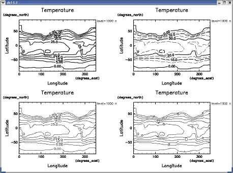</a><br>
</p><br>

<a name="h3:layout">
<p><h3>レイアウトに凝る</h3><br>
</a>

<p> 投稿論文に出す清書用の図では, レイアウトに凝りたいだろう. 
GGraphは, DCLの強力なレイアウト機能を活かし易いようになっている. 
</p><br>

<p> 次の例では, 複数のパネルから必要ない座標軸タイトル＆ラベルを
落してすっきりさせ, またスペースを節約する. 
スペース節約は, DCL.sldiv を使わず,
1フレーム中に複数の図を配置することで行う. 
そのために各図のビューポートを陽に設定し, 
さらにタイトルの書き方も細かく調整しているので, 
ソースは長くなっている. 
各々のコマンドに関しては RubyDCL のマニュアルを参照のこと. 

<a name='layout1'>
<p><a href="layout1.rb">layout1.rb</a>
</a>
<table width=80%><tr><td><pre class="source">
require "numru/ggraph"
include NumRu
gphys = GPhys::NetCDF_IO.open('T.jan.nc', 'T')

DCL.gropn(1)
DCL.sgpset('lcntl', false)   # 制御文字を解釈しない
DCL.sgpset('lfull',true)     # 全画面表示
DCL.sgpset('lcorner',false)  # コーナーマークを書かない
DCL.uzfact(0.35)             # 座標軸の文字列サイズを定数倍
DCL.sgpset('lfprop',true)    # プロポーショナルフォントを使う
DCL.udpset('lmsg',false)     # コンター間隔非表示

vpt = NArray[0.05, 0.45, 0.05, 0.25]             # ビューポートサイズ (2:1)
vpt00 = ( vpt + ([0.050]*2 + [0.32]*2) ).to_a    # x,y方向にずらしてArray化
vpt01 = ( vpt + ([0.474]*2 + [0.32]*2) ).to_a    # x,y方向にずらしてArray化
vpt10 = ( vpt + ([0.050]*2 + [0.10]*2) ).to_a    # x,y方向にずらしてArray化
vpt11 = ( vpt + ([0.474]*2 + [0.10]*2) ).to_a    # x,y方向にずらしてArray化

GGraph.set_fig('viewport'=>vpt00)
GGraph.set_axes('xunits'=>'','yunits'=>'','xtitle'=>'') 
DCL.uzpset('labelxb',false)
GGraph.contour( gphys.cut(true,true,1000), true, 'annot'=>false, 'titl'=>'' )
DCL.uzpset('pad1',0.2) ; DCL.uxsttl('t','1000 hPa',-1) ; DCL.uzpset('pad1',0.7)

GGraph.set_fig('viewport'=>vpt01, 'new_frame'=>false)
GGraph.set_axes('ytitle'=>'')
DCL.uzpset('labelyl',false)
GGraph.contour( gphys.cut(true,true,250), true, 'annot'=>false, 'titl'=>'' )
DCL.uzpset('pad1',0.2) ; DCL.uxsttl('t','250 hPa',-1) ; DCL.uzpset('pad1',0.7)

GGraph.set_fig('viewport'=>vpt10, 'new_frame'=>false)
GGraph.set_axes('ytitle'=>nil,'xtitle'=>nil)
DCL.uzpset('labelyl',true); DCL.uzpset('labelxb',true)
GGraph.contour( gphys.cut(true,true,70), true, 'annot'=>false, 'titl'=>'' )
DCL.uzpset('pad1',0.2) ; DCL.uxsttl('t','70 hPa',-1) ; DCL.uzpset('pad1',0.7)

GGraph.set_fig('viewport'=>vpt11, 'new_frame'=>false)
GGraph.set_axes('ytitle'=>'')
DCL.uzpset('labelyl',false)
GGraph.contour( gphys.cut(true,true,10), true, 'annot'=>false, 'titl'=>'' )
DCL.uzpset('pad1',0.2) ; DCL.uxsttl('t','10 hPa',-1) ; DCL.uzpset('pad1',0.7)

DCL::sgtxzv(0.5,vpt00[3]+0.028,'January Monthly Mean Temperature',
	    1.15*DCL.uzpget('rsizec2'),0,0,3)

DCL.grcls

print "\n** PRESSURE LEVELS ** " ; p gphys.coord(2).val
</pre></td></tr></table>
<br>

<p><a href='layout1.png'>layout1.rb実行結果<br>
   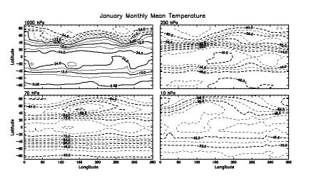</a><br>
</p><br>


<a name="h3:zahyou jiku">
<p><h3>座標軸に凝る</h3><br>
</a>

<p> GGraph は座標軸描画を DCL の USPACK に任せる（<tt>DCL.usxaxs</tt>,
<tt>DCL.usyaxs</tt>を呼ぶ）. では, 日付軸を付けたり（UCPACKを利用）, U[XY]PACK
を使ってより細かく座標軸を制御するにはどうすればいいのだろうか？
その答えは, 今のところ, GGraph に書かせず自分で書く, である. 
GGraph で軸を書くメソッド axes が描く軸は, 
以下のようにオプション <tt>'xside'</tt>, <tt>'yside'</tt>
で制御できる. 例えば X 軸を下だけ描くなら, <tt>'xside'=>'b'</tt>
である. デフォルトの初期値は <tt>'xside'=>'tb'</tt>,
<tt>'yside'=>'lr'</tt>. 

<a name='axes1'>
<p><a href="axes1.rb">axes1.rb</a>
</a>
<table width=80%><tr><td><pre class="source">
require "numru/ggraph"
include NumRu
gphys = GPhys::IO.open('T.jan.nc', 'T')
DCL.gropn(1)
DCL.sgpset('lfull',true) ; DCL.uzfact(0.6)
GGraph.set_fig( 'itr'=> 2, 'viewport'=>[0.25,0.7,0.15,0.6] )
GGraph.set_axes( 'xside'=>'b', 'yside'=>'l' )
GGraph.line( gphys.mean(0,1), true, 'exchange'=>true, 'annot'=>false )
DCL.grcls
</pre></td></tr></table>

<p><a href='axes1.png'>axes1.rb実行結果<br>
   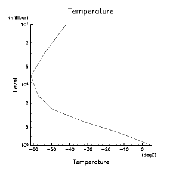</a><br>
</p><br>

<p>
GGraph を使って書かなかったところに UCPACK 等で後から座標軸を書けば良い. 
</p><br>

<hr>
<a name="h2:dRuby">
<p><h2>遠隔データにアクセスする／させる</h2><br>
</a>

<p> GPhys は, ローカルなディスク上のファイルだけでなく, 遠隔サーバーに
置いたデータにアクセスするための枠組み作りに役だつように出来ている. 
以下では, OPeNDAP/DODS という cgi による遠隔オブジェクト提供，並びに
dRuby という Ruby
における分散オブジェクトライブラリーを利用する例を示す.
</p><br>

<p>「dRubyを使ったクライアント＆サーバー」の
<a href="#h3:dRuby-1">自作編その１</a>, <a href="#h3:dRuby-2">自作編その
２</a> では，遠隔提供する GPhys オブジェクトを固定した簡単な例を用いて
仕組みを説明する．仕組みはともかく使いたい場合はとばして，
<a href="#h3:druby_gdir_services">GDirを使ったおまかせ編</a> に進むと
良い．GDir を使ってディレクトリーツリーに遠隔アクセスするための
GPhys 組み込みライブラリー gphys-remote について説明する．
</p><br>

<p>
今後は，CGI やリレーショナルデータベースの利用，ウェブサービス
についても書く予定である．
</p><br>

<a name="h3:opendap">
<p><h3>OPeNDAP/DODSを用いた遠隔データアクセス</h3><br>
</a>

<p><a href="http://www.opendap.org/">OPeNDAP/DODS</a> は，CGI による
遠隔データ提供サービスである．扱うデータは NetCDF 等のファイルに収まっ
た物理量の数値データで，様々なサーバーで用いられている．
当初は海洋学者が開発をはじめたものであり(DODS=Distributed Ocean Data 
Sytem)でブイ等のステーションデータと，格子点データを念頭において
開発されている．GPhys と同様な意味でのデータ構造の抽象化を行うことで，
複数のファイル形式を透過的にサポートしている．
</p><br>

<p>OPeNDAP/DODS は "Grid" と呼ぶデータ構造(クラス)により，座標値と格
子点値からなる GPhys と同様なオブジェクト化を行う．OPeNDAP/DODS サーバー
に乗った NetCDF ファイルであれば，自動的に座標変数の解釈を行い Grid 
オブジェクトを形成する．
</p><br>

<p> また，OPeNDAP/DODS 対応の NetCDF クライアントライブラリーが
提供されており，これを用いると NetCDF のファイル名の代わりに
OPeNDAP/DODS の URL を与えることで，遠隔データをダウンロードすることな
く直接読むことができる．その際，サーバー側にあるファイルは NetCDF でな
くても良いが，NetCDF 的なデータ構造を持っている必要がある．ステーショ
ンデータや HDF データの多くはこれに従わない．
</p><br>

<p> GPhys の下請である Ruby/NetCDF は，OPeNDAP/DODS 対応の NetCDF
クライアントがインストールされている場合，
コンパイル時にそちらをリンクするような設定になっている．Vine や
Debian 用のバイナリーパッケージでも，そうなっている．この場合，
ファイル名として OPeNDAP/DODS URL を与えるだけで，ローカルな
NetCDF ファイルと同様の読み書きができる．
</p><br>

<p> それではデータにアクセスしてみよう．ここでは
<a href="http://davis.rish.kyoto-u.ac.jp/" target=_top>電脳倶楽部データサーバー</a>
上の気象庁予報データを用いる．OPeNDAP/DODS では，ディレクトリー
（ホルダー）は通常の html サーバーと同様にブラウズすることができる：
<a
href="http://davis-dods.rish.kyoto-u.ac.jp/cgi-bin/nph-dods/jmadata/gpv/latest/gpv/"  target=_top>最近１週間ぶんのデータ</a>．
アジア域モデル RSM の最新の予報データの気圧面データの
<a href="http://davis-dods.rish.kyoto-u.ac.jp/cgi-bin/nph-dods/jmadata/gpv/latest/gpv/latest/RSM_P_latest.nc.html" target=_top>
データファイルの情報</a> にアクセスしてみよう．納められている
NetCDF ファイルのヘッダー情報を html 化したものが表示されるはずだ．
変数名には temp などがあることがわかる．
</p><br>

<p> 
では，これを可視化しよう．<a href="#h3:irb_startup_gdir">「スタートアッ
プファイルの利用(2) -- GDir の利用」</a>で紹介した irbrc_ggraph
を用い，対話的に実行することにする．
</p><br>

<table width=80%><tr><td><pre class="source">
% <span class="command">irb_ggraph --simple-prompt</span>
Start interactive GGraph session
 *** MESSAGE (SWDOPN) ***  GRPH1 : STARTED / IWS =  1.                         
>> <span class="command">GPhys::IO.var_names('http://davis-dods.rish.kyoto-u.ac.jp/cgi-bin/nph-dods/jmadata/gpv/latest/gpv/latest/RSM_P_latest.nc')</span>
=> ["lon", "lat", "p", "time", "ref_time", "z", "u", "v", "temp", "rh", "omega"]
>> <span class="command">temp = GPhys::IO.open('http://davis-dods.rish.kyoto-u.ac.jp/cgi-bin/nph-dods/jmadata/gpv/latest/gpv/latest/RSM_P_latest.nc', 'temp')</span>
=> &lt;GPhys grid=&lt;4D grid &lt;axis pos=&lt;'lon' in 'http://davis-dods.rish.kyoto-u.ac.jp/cgi-bin/nph-dods/jmadata/gpv/latest/gpv/latest/RSM_P_latest.nc'  sfloat[60]&gt;&gt;
        &lt;axis pos=&lt;'lat' in 'http://davis-dods.rish.kyoto-u.ac.jp/cgi-bin/nph-dods/jmadata/gpv/latest/gpv/latest/RSM_P_latest.nc'  sfloat[75]&gt;&gt;
        &lt;axis pos=&lt;'p' in 'http://davis-dods.rish.kyoto-u.ac.jp/cgi-bin/nph-dods/jmadata/gpv/latest/gpv/latest/RSM_P_latest.nc'  sfloat[16]&gt;&gt;
        &lt;axis pos=&lt;'time' in 'http://davis-dods.rish.kyoto-u.ac.jp/cgi-bin/nph-dods/jmadata/gpv/latest/gpv/latest/RSM_P_latest.nc'  sfloat[18]&gt;&gt;&gt;
   data=&lt;'temp' in 'http://davis-dods.rish.kyoto-u.ac.jp/cgi-bin/nph-dods/jmadata/gpv/latest/gpv/latest/RSM_P_latest.nc'  sfloat[60, 75, 16, 18]&gt;&gt;
>> <span class="command">set_fig 'itr'=>10</span>
=> {"itr"=>1}
>> <span class="command">set_map 'coast_japan'=>true</span>
=> {"coast_japan"=>false}
>> <span class="command">tone temp</span>
=> nil
>> <span class="command">contour temp, false</span>
=> nil
</pre></td></tr></table>

<p>
以上で，下のような図がかける．
</p><br>

<p><a href='opendap1.png'>実行結果<br>
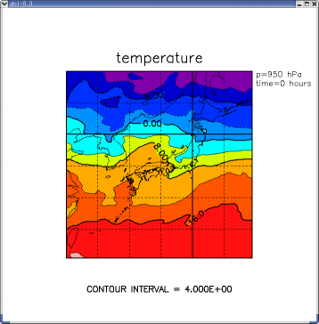</a><br>

<a name="h3:dRuby-1">
<p><h3>dRubyを使ったクライアント＆サーバー（自作編その１）</h3><br>
</a>

<p> <b>注意：手っ取り早く使うには，ここは飛ばして
<a href="#h3:druby_gdir_services">GDirを使ったおまかせ編</a>
に進むと良い．</b>
</p><br>

<p> <a href="http://www2a.biglobe.ne.jp/~seki/ruby/druby.html" target=_top>
dRuby</a> は, Rubyのメソッド呼出しを拡張し, ネットワーク越しにメソッド呼出し
を行えるようにしたライブラリーである. Ruby 1.8 には, 標準添付され
ている. Ruby 1.6 まででもダウンロードしてインストールすれば良い. 
dRuby を使うとリモートプロセス上のオブジェクトへのアクセスが, 
ローカルなオブジェクトへのアクセスと同じようにできる. 
通信相手が動いているマシンの OS 等が異なっても問題ない. 
...などと言われても, どう役に立つのかピンと来ないかもしれないので, 例で示す. 
</p><br>

<p>以下はごく簡単なサーバープログラムである. これまで使ってきた <tt>T.jan.nc</tt>
中の気温データをリモートプロセスに提供する. 
もしも実用的なサーバーを作るなら, 複数のデータを提供し, まずどれを使うかを選ばせるであろうが, ここでは dRuby の可能性を示すことを主眼に, 
データ決め打ちの簡単な例とする. 

<a name='druby_serv1'>
<p><a href="druby_serv1.rb">druby_serv1.rb</a>
</a>
<table width=80%><tr><td><pre class="source">
1: require "drb/drb"
2: require "numru/gphys"
3: include NumRu
4: gp = GPhys::IO.open("T.jan.nc","T")
5: DRb.start_service(nil, gp)
6: puts 'URI: '+DRb.uri
7: puts '[return] to exit'
8: gets
</pre></td></tr></table>

<p>1行目は dRuby のロードである. 2〜4行目はお馴染. ここでは, 
ファイル <tt>T.jan.nc</tt> 中の変数 T から GPhys オブジェクトを構成し, 
変数 gp に割り当てている. その次から, いよいよ dRuby の登場である. 
5行目では先に作った GPhys オブジェクトを「フロントエンド」として
dRuby サービスを起動している. すると, 別のプロセスがアクセスしてきたと
きにまず最初に返すのが, この GPhys オブジェクトへの参照となる. 
<tt>DRb.start_service</tt> の第１引数を nil にしているので, 
通信に使うポートは自動的に決められる（ポートを指定することも出来る）. 
6行目では, そのポート番号を含む, 
アクセスのための URI (URL) を表示する. プロセスを終了させないように, 
8行目の gets で入力待ちに入る. 改行キーを押せば終了するので, 7行目では 
'[return] to exit' と表示する. それではまず, 
このサーバーを走らせてみよう. 

<table width=80%><tr><td><pre class="source">
% <span class="command">ruby druby_serv1.rb</span>
URI: druby://horihost:45461
[return] to exit
</pre></td></tr></table>

<p> 表示された URI は, プロトコルが druby で, ホスト名が horihost, 
割り当てられたポート番号が 45461 であることを意味する. 
当然ホスト名はマシン依存であるし, 
ポート番号は（自動生成したので）実行の度に変りうる. 

<p> 次に, このサーバーに接続するクライアントの簡単な例を示す. 

<a name='druby_cli1'>
<p><a href="druby_cli1.rb">druby_cli1.rb</a>
</a>
<table width=80%><tr><td><pre class="source">
1: require "drb/drb"
2: DRb.start_service
3: uri = ARGV.shift || raise("Usage: % #{$0} uri")
4: gp = DRbObject.new(nil, uri)
5: p gp.class
6: p gp.name
7: p gp.rank
8: p gp.shape
9: print gp.coord(2).name,"\n"
</pre></td></tr></table>

<p>プログラムを解説する前に, これを実行した場合の結果を示そう. 
先ほどサーバーの URI が <tt>druby://horihost:45461</tt> と出たので, 
それにアクセスすべく, 次のように走らせる. 

<table width=80%><tr><td><pre class="source">
% <span class="command">ruby druby_cli1.rb druby://horihost:45461</span>
DRb::DRbObject
"T"
3
[36, 19, 9]
level
</pre></td></tr></table>

<p> さて, ソースと実行結果を解説する. 
ソースの1行目はサーバーと同じである. 2行目では <tt>DRb.start_service</tt>
を呼んでいる. 引数なしの場合は, フロントエンドオブジェクトなしである. 
他のプロセス<b>から</b>の接続を受けないクライアントとしてはこれで良い. 
3行目では, 実行時に与えた引数を読み込んでいる. <tt>||</tt> 以下は, 
もしも引数がなかった場合に例外を上げて実行を止める. 上の実行例では
引数は <tt>druby://horihost:45461</tt> なので, これが文字列として
変数 uri に代入される. ４行目では, <tt>DRbObject.new(nil, uri)</tt>
により, この uri に対して接続を確立する. その結果, 
サーバーにおけるフロントエンドオブジェクトへの参照用オブジェクトが
作られ, 変数 <tt>gp</tt> に代入される. 従って, ここでは <tt>gp</tt>
は, サーバーが開いた気温データ（GPhys オブジェクト）を代表することになる. 
5行目以降では, このフロントエンドに対し, 
様々なメッセージを送り付け, その結果を標準出力に出力する. 
ソースと出力を見比べてみよう. 5行目では <tt>gp</tt>
にクラスを問合わせている. メソッド <tt>class</tt> はローカルに処理され, dRuby
のリモートオブジェクトであることを示す <tt>DRb::DRbObject</tt>
が表示される（class は全てのオブジェクトが持っているので, 
<tt>DRb::DRbObject</tt> も当然持っている）. 
6行目以降の, name 等のメソッドは, 
<tt>DRb::DRbObject</tt> にはないので, サーバーに送られて実行され, 
その結果がクライアントに通信される. 
このようにして, 
名前が "T" の3次元データであることなどが明らかになるのである. 
なお, クライアントプログラムでは GPhys ライブラリーを
ロードしていないことに注意せよ. クライアントが必要なのが GPhys
オブジェクトに対する参照だけである場合は, 必要ないのである. 

<p> 以上より, dRuby を使うと, リモートプロセス内のオブジェクトに, 
自プロセス内のオブジェクトと同じようにアクセス出来ることがわかったであ
ろう. なお, 上のサーバーとクライアントを一つにまとめて同じことをさせる（つまり分散処理しない）と, 
以下のようになる. サーバーとクライアントの, 
それぞれ前半と後半を繋いだだけであることが分かるであろう. 

<a name='druby_self-contained1'>
<p><a href="druby_self-contained1.rb">druby_self-contained1.rb</a>
</a>
<table width=80%><tr><td><pre class="source">
1: require "numru/gphys"
2: include NumRu
3: gp = GPhys::IO.open("T.jan.nc","T")
4: p gp.class
5: p gp.name
6: p gp.rank
7: p gp.shape
8: print gp.coord(2).name,"\n"
</pre></td></tr></table>

<p> 実行結果は以下の通り. 出力されるクラス名が GPhys になった
以外は全く同じである. 

<table width=80%><tr><td><pre class="source">
% <span class="command">ruby druby_self-contained1.rb </span>
NumRu::GPhys
"T"
3
[36, 19, 9]
level
</pre></td></tr></table>
<br>

<a name="h3:dRuby-2">
<p><h3>dRubyを使ったクライアント＆サーバー（自作編その２）</h3><br>
</a>

<p>
上の例を発展させて, データの図を書いてみよう. 
データを持つのはサーバー, 図を書くのはクライアントである. 
では, まずサーバープログラムを示す. 
描くための配列データ(NArray)は, 
クライアントにおいて DCL に渡す必要があるが, 実は
NArray はそのままでは dRuby で送れない. 
よって, NArray を拡張して送れるようにする必要があり, 若干行が増える. 
以下のソースで,  5〜8 行目がそれである. ちなみにこれは組み込みのモジュール
Marshal に NArray を対応させるための拡張である. 
この追加以外は druby_serv1.rb と同じ. よって, 実行方法も同じある. 

<a name='druby_serv2'>
<p><a href="druby_serv2.rb">druby_serv2.rb</a>
</a>
<table width=80%><tr><td><pre class="source">
 1: require "drb/drb"
 2: require "numru/ggraph"
 3: include NumRu
 4: 
 5: class NArray
 6:   def self._load(o); to_na(*Marshal::load(o)).ntoh; end
 7:   def _dump(limit); Marshal::dump([hton.to_s, typecode, *shape]); end
 8: end
 9: 
10: gp = GPhys::IO.open("T.jan.nc","T")
11: DRb.start_service(nil, gp)
12: puts 'URI: '+DRb.uri
13: puts '[return] to exit'
14: gets
</pre></td></tr></table>

<p> さて, クライアントである. こちらも同様に NArray を拡張する. 

<a name='druby_cli2'>
<p><a href="druby_cli2.rb">druby_cli2.rb</a>
</a>
<table width=80%><tr><td><pre class="source">
 1: require "drb/drb"
 2: require "numru/ggraph"
 3: include NumRu
 4: 
 5: class NArray
 6:   def self._load(o) to_na(*Marshal::load(o)).ntoh end
 7: end
 8: 
 9: DRb.start_service
10: uri = ARGV.shift || raise("Usage: % #{$0} uri")
11: gp = DRbObject.new(nil, uri)
12: DCL.gropn(1)
13: DCL.sldiv('y',2,1)
14: DCL.sgpset('lcntl',false)
15: DCL.uzfact(0.7)
16: GGraph.set_fig('viewport'=>[0.15,0.75,0.2,0.8])
17: GGraph.contour( gp.cut('level'=>100) )
18: GGraph.next_fig('itr'=>2)
19: GGraph.contour( gp.mean(0) )
20: DCL.grcls
</pre></td></tr></table>

<p> サーバー側：

<table width=80%><tr><td><pre class="source">
% <span class="command">ruby druby_serv2.rb</span>
URI: druby://horihost:45469
[return] to exit
</pre></td></tr></table>

<p> クライアント側：

<table width=80%><tr><td><pre class="source">
% <span class="command">ruby druby_cli2.rb druby://horihost:45469</span>
 *** MESSAGE (SWDOPN) ***  GRPH1 : STARTED / IWS =  1.      
 *** WARNING (STSWTR) ***  WORKSTATION VIEWPORT WAS MODIFIED.
 *** MESSAGE (SWPCLS) ***  GRPH1 : PAGE =   1 COMPLETED.
 *** MESSAGE (SWDCLS) ***  GRPH1 : TERMINATED.
</pre></td></tr></table>

<p><a href='druby_cli2.png'>druby_cli2.rb実行結果<br>
   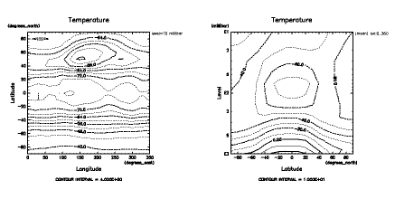</a><br>
</p><br>

<p> 先ほどの例と同様, クライアントでは, 
ひと度サーバーのフロントオブジェクトを取得した後は, 
データがローカルにあるのと同様に扱っている. 
</p><br>

<p> このように参照と複製の区別をする必要がある場合はあるが, 
とりえあず, 描画命令に渡すものは複製すると覚えておけば良かろう. 
ともかく, 上の例よりリモートデータの可視化がごく簡単に実現できることが
分かっただろう. 参考までに, 上のサーバーとクライアントを一体化させた
非分散版のソースを示す. もはや <tt>copy</tt> は必要ないが, そのまま残した. 
実行してできる図は勿論全く同じである. 

<a name='druby_self-contained2'>
<p><a href="druby_self-contained2.rb">druby_self-contained2.rb</a>
</a>
<table width=80%><tr><td><pre class="source">
require "numru/ggraph"
include NumRu
gp = GPhys::IO.open("T.jan.nc","T")
DCL.gropn(1)
DCL.sldiv('y',2,1)
DCL.sgpset('lcntl',false)
DCL.uzfact(0.7)
GGraph.set_fig('viewport'=>[0.15,0.75,0.2,0.8])
GGraph.contour( gp.cut('level'=>100) )
GGraph.next_fig('itr'=>2)
GGraph.contour( gp.mean(0).copy )
DCL.grcls
</pre></td></tr></table>

<a name="h3:druby_gdir_services">
<p><h3>dRubyを使ったクライアント＆サーバー（GDirを使ったおまかせ編）</h3><br>
</a>

<p> GPhys-0.5.0 より，<a
href="http://ruby.gfd-dennou.org/products/gphys-remote/">
gphys-remote</a> という別パッケージとして開発されていた dRuby を利用
するライブラリーとコマンドのパッケージが GPhys に取り込まれた．
gphys-remote のサーバーは，<a href="#h2:gdir">GDir</a> を dRuby のフロ
ントエンドオブジェクトすることで，適当な起点以下のディレクトリーツリー
全体を，遠隔アクセス可能にするものである（read-onlyである）．一方，上
で紹介した<a href="#h3:irb_startup_gdir">GDir を使うためのirb用スター
トアップファイル</a> の dRuby クライアント版が用意されているので，これ
を使うことで，ローカルファイルシステムに置いて GDir を使うのと同様に遠
隔データにアクセスできる．よって，ftp のように，遠隔ファイルシステムを
ブラウズでき，かつデータの解析，可視化が行える．
なお，<a href="http://ruby.gfd-dennou.org/products/gave/"
target=_top>gave</a>は gphys-remote サーバーに接続可能である.
</p><br>

<p>GPhys-remote をインストールすると, コマンド gdir_server と
gdir_client がインストールされる．前者は GDir 遠隔提供のためのサーバー
プログラムであり，後者は前者にアクセスするためのクライアントプログラム
である．コマンド gdir_client の中身は，単に

<table width=80%><tr><td><pre class="source">
irb -r numru/gdir_connect_ftp-like
</pre></td></tr></table>

<p> となっている．つまり，"numru/gdir_connect_ftp-like" を require し
た上で，irb を走らせるというのが実体である．可視化のため別のスタートアッ
プファイルを読み込みたい場合は，コマンドラインで

<table width=80%><tr><td><pre class="source">
% <span class="command">irb -r ~/.irbrc_ggraph -r numru/gdir_connect_ftp-like</span>
</pre></td></tr></table>

<p>
などとすると良い．
</p><br>

<p>
それではまず，サーバーを立ち上げよう．GPhys 配布パッケージに含まれるデー
タを使うことにするので，それを展開したトップディレクトリーに cd し，そ
こをサーバーのルートディレクトリーとしてサービスの起点にする：

<table width=80%><tr><td><pre class="source">
% <span class="command">cd gphys-0.5.0</span>
% <span class="command">gdir_server . -a all</span>
URI: druby://horihost:45954
[return] to exit
</pre></td></tr></table>

<p> gdir_server の最初の引数（ここでは "."）は，ルートディレクトリーの
指定である．-a で指定するのは接続を許すホストである．デフォルトはロー
カルホストのみで，上の例では，すべてのホストからのアクセスを許すので，
好ましくない．-a オプションは繰り返して指定できるので，
<table width=80%><tr><td><pre class="source">
% <span class="command">gdir_server . -a '192.168.1.*' -a localhost</span>
</pre></td></tr></table>
などと，接続したいホストを列挙すると良いだろう．
</p><br>

<p> 上記の gdir_server 実行結果の表示から，サーバーの URL は 
druby://horihost:45954 となったことがわかる.
ポート番号 45954 は自動的に割り振られた空きポートである．ポートやホス
ト名を陽に指定するには以下のようにする．

<table width=80%><tr><td><pre class="source">
% <span class="command">gdir_server . 12345</span>
% <span class="command">gdir_server . localhost:12345</span>
</pre></td></tr></table>
</p><br>

<p> 
次いで，gdir_client (または irb -r numru/gphys_connect_ftp-like)
を用いてこのサーバーに接続しよう.
最初にサーバーの URL を訪ねられるので入力する.
あとは help とすれば使えるであろう.

<table width=80%><tr><td><pre class="source">
% <span class="command">gdir_client</span>
** A GPhys service client. To conetct, type in server's URI(return)
   (format: druby://host:port). Type in help to see usage.
URI>> <span class="command">druby://horihost:45954</span>
***************************************************************
*                          WELCOME!
*
*  You logged in druby://tsudalx3:45954 
*  with /usr/local/lib/ruby/site_ruby/1.8/numru/gdir_connect_ftp-like.rb: 
*  an irb-based ftp-like client of a gphys service (such as gdir_server.rb).
*
*  This client is to be started as
*
*    % irb --noinspect -r "numru/gphys_connect_ftp-like"
*
*  if you are running on a interactive ruby shell such as irb,
*  quit and start again like this.
***************************************************************

Type in
  help
for available methods 

irb(main):001:0> <span class="command">help</span>

= irb start-up program numru/gdir_connect_ftp-like

A ftp-like client of GPhys directory services (e.g., gdir_server.rb).
Connection is based on dRuby.

== Usage
    At command line,
     % irb --noinspect -r numru/gphys_connect_ftp-like
    then type in the URI of the server.

== Available Methods
    Native methods:
      help  help_more  ls  dir  pwd  cd(path)  open(name)  readtext(name)
      start_dcl(iws=1, iwidth=500, iheight=500, uzfact=1.0)

    All GGraph methods:
      contour(gphys)  line(gphys)  etc.etc.


Type in
  help_more
For more info.
=> nil
irb(main):002:0> <span class="command">help_more</span>

== Methods
---help
    Show a help message
---help_more
    Show a further help message
---ls
    List the directory.
---dir
---ls_l
    Like ls but with a long descriptive format
---pwd
    Prints the path of the current directory.
---open(name)
    opens a GPhys, where name is a variable name in the current directory
    (shown by ls without trailing "/").
---readtext(name)
    prints the contents of the text file in the current directory
    (shown by ls with remarks as such).
---start_dcl(iws=1, iwidth=500, iheight=500, uzfact=1.0)
    To start RubyDCL (Calls DCL.gropn(iws)).
    Call this before using GGraph module functions such as contour.
---contour
---line
      GGraph methods

=> nil
irb(main):003:0> <span class="command">ls</span>
Directories:
  'bin/'
  'doc/'
  'lib/'
  'sample/'
  'test/'
  'testdata/'
Text files?:
  'ChangeLog'
  'README'
  'TODO_ep_flux'
=> nil
irb(main):004:0> <span class="command">cd 'testdata'</span>
/testdata/
=> nil
irb(main):005:0> <span class="command">ls</span>
Directories:
  'T.jan.ctl/'
  'T.jan.grib/'
  'T.jan.nc/'
  'T.jan.packed.withmiss.nc/'
=> nil
irb(main):006:0> <span class="command">cd 'T.jan.ctl/'</span>
/testdata/T.jan.ctl/
=> nil
irb(main):007:0> <span class="command">ls</span>
Data:
  'T'
=> nil
irb(main):008:0> <span class="command">gphys = open 'T'</span>
=> #<DRb::DRbObject:0x40a092ac @uri="druby://horihost:45954", @ref=541737212>
irb(main):009:0> <span class="command">start_dcl(1, 700, 700)</span>
 *** MESSAGE (SWDOPN) ***  GRPH1 : STARTED / IWS =  1.                         
=> nil
irb(main):010:0> <span class="command">contour gphys</span>
 *** WARNING (STSWTR) ***  WORKSTATION VIEWPORT WAS MODIFIED.                  
irb(main):011:0> contour gphys.mean(0)
 *** MESSAGE (SWPCLS) ***  GRPH1 : PAGE =   1 COMPLETED.                       
=> nil
=> nil
</pre></td></tr></table>

<p> これで下のような図が表示される. ローカルなデータに対して
GDir を利用するのと同じように使えることが分かるであろう．
ただし，最初の描画においては，通信されるのは描画される２次元断
面分のみのデータであり，また，次の描画においては，経度に関する
平均操作はサーバー側で行われる．このため，いずれも通信量は小さい．

<table><tr><td>
<p><a href='gphys-remote_sample1.png'>上の irb セッションの実行結果(1)<br>
   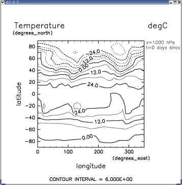</a>
</p><br>
</td><td>
<p><a href='gphys-remote_sample1.png'>上の irb セッションの実行結果(2)<br>
   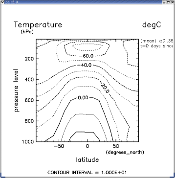</a>
</p><br>
</td></tr></table>

なお，グラフィックの設定のため別のスタートアップファイルを読み込みたい
場合は，コマンド gdir_client でなく，その中身である
irb -r numru/gdir_connect_ftp-like にさらに -r オプションを足して，

<table width=80%><tr><td><pre class="source">
% <span class="command">irb -r ~/.irbrc_ggraph -r numru/gdir_connect_ftp-like</span>
</pre></td></tr></table>

<p>
などとすると良い．
</p><br>


<a name="h3:druby_ssh_tunneling">
<p><h3>dRuby利用時のファイヤウォール越え (ssh トンネリング)</h3><br>
</a>

<p>
dRuby は任意番号のポートで通信できる．しかし，今日日，一般ユーザーに使
える1000番以上のポートで外部との通信を許しているところは稀であろう．
その場合，ssh によるポートフォーワディング（トンネリング）を使うと良い．
ssh が使えるのは，アカウントがあるマシンに対してだけである．しかし，
dRuby をそのまま一般に広く解放して運用するのは，セキュリティー面から推
奨できないので，いずれにしろ，アカウントのあるユーザーにアクセスを限っ
たほうが良いであろう．
</p><br>

<p>
ssh のポートフォーワーディングは次のように行う．

<ul>

<li> ローカルホストの port 12300 番へのアクセスを，
遠隔ホストの port 12300 番に転送する：
      
<table width=80%><tr><td><pre class="source">
% ssh -L 12300:localhost:12300 remotehost
</td></tr></table>

<li> 遠隔ホストの port 12300 番へのアクセスを，
ローカルホストの port 12300 番に転送する：
      
<table width=80%><tr><td><pre class="source">
% ssh -R 12300:localhost:12300 remotehost
</td></tr></table>

</ul>

</p><br>

<p>
実際のサーバー立ち上げとアクセスは次のように行う．

<ul>
  <li> localhost のウィンドー(ktermなど) １:
<table width=80%><tr><td><pre class="source">
localhost% <span class="command">ssh -L 12300:localhost:12300 user@remotehost</span>
Password: ********

ログインメッセージ...

remotehost% <span class="command">cd ....</span>    # どこなりと
remotehost% <span class="command">gdir_server . localhost:12300</span>    # サーバー立ち上げ
</td></tr></table>
</ul>

<p>
このようにGDirサーバーをリモートで立ち上げ，
ローカルホストからアクセスする：

<ul>
<li> localhost のウィンドー(ktermなど) ２:

<table width=80%><tr><td><pre class="source">
localhost% <span class="command">gdir_client</span>
** A GPhys service client. To conetct, type in server's URI(return)
   (format: druby://host:port). Type in help to see usage.
URI>> <span class="command">druby://localhost:12300</span>
***************************************************************
*                          WELCOME!
*
*  You logged in druby://localhost:12300
..略..
</td></tr></table>
</ul>

<p>
先に，ウィンドー１でローカルホストから遠隔ホストへのポートフォーワーディ
ングを確立してあるので，ローカルの 12300 番への通信は遠隔ホストに転送される．
遠隔ホストの 12300 番ポートでは gdir_server が通信を行うべく待ち構えて
いるので，これで接続できるのである．
</p><br>


<a name="h3:druby_ssh_dual_tunneling">
<p><h4>逆向きトンネリング／第３ホスト経由トンネリング</h4><br>

<p>
遠隔ホストが外部からのポートフォーワーディングを許してない場合もあり得
る．その場合，遠隔ホスト側においてトンネルを掘れば良い：

<p> ウィンドー１:
<table width=80%><tr><td><pre class="source">
remotehost% <span class="command">ssh -R 12300:localhost:12300 user@localhost</span>
Password: ********
ログインメッセージ...
</td></tr></table>

<p> ウィンドー２:
<table width=80%><tr><td><pre class="source">
remotehost% <span class="command">gdir_server . localhost:12300</span>    # サーバー立ち上げ
</td></tr></table>

<p> ウィンドー３:
<table width=80%><tr><td><pre class="source">
localhost% <span class="command">gdir_client</span>
** A GPhys service client. To conetct, type in server's URI(return)
   (format: druby://host:port). Type in help to see usage.
URI>> <span class="command">druby://localhost:12300</span>
***************************************************************
*                          WELCOME!
*
*  You logged in druby://localhost:12300
..略..
</td></tr></table>
</p><br>

<p>
もしも，ローカルホストがファイヤウォール内にあってグローバル IP アドレス
を持たない場合，上記の ssh -R 12300:localhost:12300 user@localhost が
行えない．その場合，アカウントがありグローバルなアドレスのある第３のホ
ストを経由するという手がある．

<p> ウィンドー１:
<table width=80%><tr><td><pre class="source">
remotehost% <span class="command">ssh -R 12300:localhost:12300 user@thirdhost</span>
Password: ********
ログインメッセージ...
</td></tr></table>

<p> ウィンドー２:
<table width=80%><tr><td><pre class="source">
localhost% <span class="command">ssh -L 12300:localhost:12300 user@thirdhost</span>
Password: ********
ログインメッセージ...
</td></tr></table>

<p> ウィンドー３:
<table width=80%><tr><td><pre class="source">
remotehost% <span class="command">gdir_server . localhost:12300</span>    # サーバー立ち上げ
</td></tr></table>

<p> ウィンドー４:
<table width=80%><tr><td><pre class="source">
localhost% <span class="command">gdir_client</span>
** A GPhys service client. To conetct, type in server's URI(return)
   (format: druby://host:port). Type in help to see usage.
URI>> <span class="command">druby://localhost:12300</span>
***************************************************************
*                          WELCOME!
*
*  You logged in druby://localhost:12300
..略..
</td></tr></table>

<a name="h3:dRuby-chuui">
<p><h3>dRuby 利用に関する注意</h3><br>
</a>

<p> dRuby では，遠隔プロセスに必要なオブジェクトが Ruby のゴミ集め(GC)
に回収されてしまうよう，対策が必要である．gdir_server では，dRuby 付属
の TimerIdConv というものを用いて，20分間は回収されないように設定して
ある．逆に言えば，20分たったオブジェクトはサーバー側でゴミとして回収さ
れてしまいアクセスできないという可能性がある．将来的にはこの時間はオプ
ションで指定できるようにしたい．
</p><br>

<p>
dRuby サーバーのセキュリティーは保証しがたい.
サーバーは広く一般に公開すべきではない．
また，サーバーは立ち上げっ放しにせず, 適宜終了しよう.
</p><br>

<p>
dRuby はデータ転送を行うとき, Marshal という Ruby の組み込みライブラリー
によって, オブジェクトをバイト列に変換する. Marshal のフォーマットは
Ruby 1.6 → Ruby 1.8 で変更されたので, 残念ながら, 
通信は 1.6 同志または 1.8 同志に限られる. 
</p><br>

<p> gdir_server では，現在はファイルから読み込まれて NArray 化
したデータはすべてネットワーク転送の対象となる．これに対し，
回線が細い場合，ある程度小さいサイズになるまではサーバー側から
出ないような設定にすることが有効である．gdir_server における
NArray のメソッド定義の箇所を，下のように書き換えると，
データ長が，40000個（バイトでなく個数）以上のデータは転送されなくなる
ので，サーバー側に留まるようになる．

<p>
<table width=80%><tr><td><pre class="source">
class NArray
  DUMP_SIZE_LIMIT = 40000
  def self._load(o) to_na(*Marshal::load(o)).ntoh end
  def _dump(limit) 
    if size <= DUMP_SIZE_LIMIT
      Marshal::dump([hton.to_s, typecode, *shape]) 
    else
      raise "size of the NArray (#{size}) is too large to dump "+
            "(limit: #{DUMP_SIZE_LIMIT})"
    end
  end
end
</pre></td></tr></table>


<a name="h3:cgi-rdbms">
<p><h3>CGIとリレーショナルデータベース</h3><br>
</a>

<p> <b>お待ち下さい -- 本コーナーは今後作成の予定です．</b>

<p> <a href="http://www.rubyonrails.com/">Ruby on Rails</a>を使うと，
データベースと連携した検索可能なデータ提供サーバーを作ることができます．
まだ，実例を出せないので，お急ぎの方はすみませんが自力でお願いします．
Ruby on Rails は非常に良くできていて使いやすいです．
</p><br>


<hr>

<p>Copyright (C) 2003 GFD Dennou Club. All Rights Reserved.<p>

</body>
</html>
